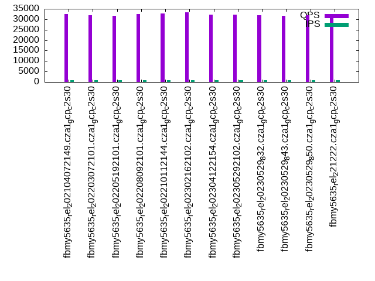

Introduction
This is a report for the insert benchmark with 160M docs and 8 client(s). It is generated by scripts (bash, awk, sed) and Tufte might not be impressed. An overview of the insert benchmark is here and a short update is here. Below, by DBMS, I mean DBMS+version.config. An example is my8020.c10b40 where my means MySQL, 8020 is version 8.0.20 and c10b40 is the name for the configuration file.
The test server is a c2-standard-30 from GCP with 15 cores, hyperthreads disabled, Ubuntu 22.04 and XFS using SW RAID 0 over 4 local SSDs. The benchmark was run with 8 clients and there were 1, 2 or 3 connections per client. It uses 8 tables with a client per table. It loads 20M rows per table without secondary indexes, creates 3 secondary indexes per table, then inserts 50m+50m rows per table with a delete per insert to avoid growing the table. It then does 6 read+write tests for 1200s each that do queries as fast as possible with 100,100,500,500,1000,1000 inserts/s and the same for deletes/s per client concurrent with the queries. The database is cached in memory. Clients and the DBMS share one server. The per-database configs are in the per-database subdirectories here.
The tested DBMS are:
- fbmy5635_rel_202104072149.cza1_gcp_c2s30 - MyRocks 5.6.35 compiled from code as of 2021-04-07 at git hash f896415f with RocksDB 6.19.0, cza1_gcp_c2s30 config
- fbmy5635_rel_202203072101.cza1_gcp_c2s30 - MyRocks 5.6.35 compiled from code as of 2022-03-07 at git hash e7d976ee with RocksDB 6.28.2, cza1_gcp_c2s30 config
- fbmy5635_rel_202205192101.cza1_gcp_c2s30 - MyRocks 5.6.35 compiled from code as of 2022-05-19 at git hash d503bd77 with RocksDB 7.2.2, cza1_gcp_c2s30 config
- fbmy5635_rel_202208092101.cza1_gcp_c2s30 - MyRocks 5.6.35 compiled from code as of 2022-08-09 at git hash 877a0e58 with RocksDB 7.3.1, cza1_gcp_c2s30 config
- fbmy5635_rel_202210112144.cza1_gcp_c2s30 - MyRocks 5.6.35 compiled from code as of 2022-10-11 at git hash c691c716 with RocksDB 7.3.1, cza1_gcp_c2s30 config
- fbmy5635_rel_202302162102.cza1_gcp_c2s30 - MyRocks 5.6.35 compiled from code as of 2023-02-16 at git hash 21a2b0aa with RocksDB 7.10.0, cza1_gcp_c2s30 config
- fbmy5635_rel_202304122154.cza1_gcp_c2s30 - MyRocks 5.6.35 compiled from code as of 2023-04-12 at git hash 205c31dd with RocksDB 7.10.2, cza1_gcp_c2s30 config
- fbmy5635_rel_202305292102.cza1_gcp_c2s30 - MyRocks 5.6.35 compiled from code as of 2023-05-29 at git hash b739eac1 with RocksDB 8.2.1, cza1_gcp_c2s30 config
- fbmy5635_rel_20230529_832.cza1_gcp_c2s30 - MyRocks 5.6.35 compiled from code as of 2023-05-29 at git hash b739eac1 with RocksDB 8.3.2, cza1_gcp_c2s30 config
- fbmy5635_rel_20230529_843.cza1_gcp_c2s30 - MyRocks 5.6.35 compiled from code as of 2023-05-29 at git hash b739eac1 with RocksDB 8.4.3, cza1_gcp_c2s30 config
- fbmy5635_rel_20230529_850.cza1_gcp_c2s30 - MyRocks 5.6.35 compiled from code as of 2023-05-29 at git hash b739eac1 with RocksDB 8.5.0, cza1_gcp_c2s30 config
- fbmy5635_rel_221222.cza1_gcp_c2s30 - MyRocks 5.6.35 compiled on Dec 22, 2023 at git hash 4f3a57a1, RocksDB 8.7.0 at git hash 29005f0b, cza1_gcp_c2s30 config
Contents
- Summary
- l.i0: load without secondary indexes
- l.x: create secondary indexes
- l.i1: continue load after secondary indexes created with 50 inserts per transaction
- l.i2: continue load after secondary indexes created with 5 inserts per transaction
- qr100.L1: range queries with 100 insert/s per client
- qp100.L2: point queries with 100 insert/s per client
- qr500.L3: range queries with 500 insert/s per client
- qp500.L4: point queries with 500 insert/s per client
- qr1000.L5: range queries with 1000 insert/s per client
- qp1000.L6: point queries with 1000 insert/s per client
Summary
The numbers are inserts/s for l.i0, l.i1 and l.i2, indexed docs (or rows) /s for l.x and queries/s for qr100, qp100 thru qr1000, qp1000" The values are the average rate over the entire test for inserts (IPS) and queries (QPS). The range of values for IPS and QPS is split into 3 parts: bottom 25%, middle 50%, top 25%. Values in the bottom 25% have a red background, values in the top 25% have a green background and values in the middle have no color. A gray background is used for values that can be ignored because the DBMS did not sustain the target insert rate. Red backgrounds are not used when the minimum value is within 80% of the max value.
| dbms | l.i0 | l.x | l.i1 | l.i2 | qr100 | qp100 | qr500 | qp500 | qr1000 | qp1000 |
|---|---|---|---|---|---|---|---|---|---|---|
| fbmy5635_rel_202104072149.cza1_gcp_c2s30 | 622568 | 842106 | 94984 | 42194 | 27237 | 32608 | 25070 | 29560 | 23526 | 28391 |
| fbmy5635_rel_202203072101.cza1_gcp_c2s30 | 606061 | 855616 | 92673 | 42172 | 26511 | 31862 | 24818 | 29241 | 23804 | 27826 |
| fbmy5635_rel_202205192101.cza1_gcp_c2s30 | 592592 | 860216 | 91298 | 41344 | 25534 | 31521 | 23358 | 28865 | 23637 | 27419 |
| fbmy5635_rel_202208092101.cza1_gcp_c2s30 | 603774 | 860216 | 91142 | 41841 | 24686 | 32379 | 24559 | 29308 | 24378 | 28293 |
| fbmy5635_rel_202210112144.cza1_gcp_c2s30 | 601504 | 855616 | 91507 | 42172 | 23415 | 32882 | 24034 | 29680 | 23362 | 28463 |
| fbmy5635_rel_202302162102.cza1_gcp_c2s30 | 637450 | 820513 | 91980 | 43478 | 25374 | 33344 | 25387 | 31643 | 24895 | 29601 |
| fbmy5635_rel_202304122154.cza1_gcp_c2s30 | 637450 | 812183 | 91428 | 42530 | 25681 | 32182 | 23938 | 30603 | 23290 | 28544 |
| fbmy5635_rel_202305292102.cza1_gcp_c2s30 | 629921 | 824743 | 91533 | 42350 | 27044 | 32067 | 24882 | 30572 | 22808 | 28596 |
| fbmy5635_rel_20230529_832.cza1_gcp_c2s30 | 629921 | 816327 | 91559 | 42172 | 27352 | 32047 | 23589 | 30471 | 22089 | 28616 |
| fbmy5635_rel_20230529_843.cza1_gcp_c2s30 | 627451 | 812183 | 91664 | 42328 | 23604 | 31595 | 22303 | 29978 | 20664 | 28178 |
| fbmy5635_rel_20230529_850.cza1_gcp_c2s30 | 629921 | 816327 | 91822 | 42172 | 23444 | 31868 | 23725 | 30316 | 22852 | 28587 |
| fbmy5635_rel_221222.cza1_gcp_c2s30 | 629921 | 812183 | 91402 | 42508 | 25252 | 32006 | 23084 | 30582 | 23237 | 28627 |
This table has relative throughput, throughput for the DBMS relative to the DBMS in the first line, using the absolute throughput from the previous table. Values less than 0.95 have a yellow background. Values greater than 1.05 have a blue background.
| dbms | l.i0 | l.x | l.i1 | l.i2 | qr100 | qp100 | qr500 | qp500 | qr1000 | qp1000 |
|---|---|---|---|---|---|---|---|---|---|---|
| fbmy5635_rel_202104072149.cza1_gcp_c2s30 | 1.00 | 1.00 | 1.00 | 1.00 | 1.00 | 1.00 | 1.00 | 1.00 | 1.00 | 1.00 |
| fbmy5635_rel_202203072101.cza1_gcp_c2s30 | 0.97 | 1.02 | 0.98 | 1.00 | 0.97 | 0.98 | 0.99 | 0.99 | 1.01 | 0.98 |
| fbmy5635_rel_202205192101.cza1_gcp_c2s30 | 0.95 | 1.02 | 0.96 | 0.98 | 0.94 | 0.97 | 0.93 | 0.98 | 1.00 | 0.97 |
| fbmy5635_rel_202208092101.cza1_gcp_c2s30 | 0.97 | 1.02 | 0.96 | 0.99 | 0.91 | 0.99 | 0.98 | 0.99 | 1.04 | 1.00 |
| fbmy5635_rel_202210112144.cza1_gcp_c2s30 | 0.97 | 1.02 | 0.96 | 1.00 | 0.86 | 1.01 | 0.96 | 1.00 | 0.99 | 1.00 |
| fbmy5635_rel_202302162102.cza1_gcp_c2s30 | 1.02 | 0.97 | 0.97 | 1.03 | 0.93 | 1.02 | 1.01 | 1.07 | 1.06 | 1.04 |
| fbmy5635_rel_202304122154.cza1_gcp_c2s30 | 1.02 | 0.96 | 0.96 | 1.01 | 0.94 | 0.99 | 0.95 | 1.04 | 0.99 | 1.01 |
| fbmy5635_rel_202305292102.cza1_gcp_c2s30 | 1.01 | 0.98 | 0.96 | 1.00 | 0.99 | 0.98 | 0.99 | 1.03 | 0.97 | 1.01 |
| fbmy5635_rel_20230529_832.cza1_gcp_c2s30 | 1.01 | 0.97 | 0.96 | 1.00 | 1.00 | 0.98 | 0.94 | 1.03 | 0.94 | 1.01 |
| fbmy5635_rel_20230529_843.cza1_gcp_c2s30 | 1.01 | 0.96 | 0.97 | 1.00 | 0.87 | 0.97 | 0.89 | 1.01 | 0.88 | 0.99 |
| fbmy5635_rel_20230529_850.cza1_gcp_c2s30 | 1.01 | 0.97 | 0.97 | 1.00 | 0.86 | 0.98 | 0.95 | 1.03 | 0.97 | 1.01 |
| fbmy5635_rel_221222.cza1_gcp_c2s30 | 1.01 | 0.96 | 0.96 | 1.01 | 0.93 | 0.98 | 0.92 | 1.03 | 0.99 | 1.01 |
This lists the average rate of inserts/s for the tests that do inserts concurrent with queries. For such tests the query rate is listed in the table above. The read+write tests are setup so that the insert rate should match the target rate every second. Cells that are not at least 95% of the target have a red background to indicate a failure to satisfy the target.
| dbms | qr100.L1 | qp100.L2 | qr500.L3 | qp500.L4 | qr1000.L5 | qp1000.L6 |
|---|---|---|---|---|---|---|
| fbmy5635_rel_202104072149.cza1_gcp_c2s30 | 794 | 793 | 3967 | 3970 | 7947 | 7947 |
| fbmy5635_rel_202203072101.cza1_gcp_c2s30 | 794 | 794 | 3970 | 3967 | 7940 | 7940 |
| fbmy5635_rel_202205192101.cza1_gcp_c2s30 | 794 | 793 | 3967 | 3970 | 7947 | 7947 |
| fbmy5635_rel_202208092101.cza1_gcp_c2s30 | 793 | 793 | 3970 | 3970 | 7947 | 7947 |
| fbmy5635_rel_202210112144.cza1_gcp_c2s30 | 793 | 794 | 3970 | 3970 | 7947 | 7940 |
| fbmy5635_rel_202302162102.cza1_gcp_c2s30 | 793 | 794 | 3970 | 3970 | 7947 | 7940 |
| fbmy5635_rel_202304122154.cza1_gcp_c2s30 | 793 | 793 | 3970 | 3970 | 7947 | 7947 |
| fbmy5635_rel_202305292102.cza1_gcp_c2s30 | 793 | 793 | 3970 | 3970 | 7947 | 7947 |
| fbmy5635_rel_20230529_832.cza1_gcp_c2s30 | 793 | 794 | 3970 | 3970 | 7947 | 7940 |
| fbmy5635_rel_20230529_843.cza1_gcp_c2s30 | 794 | 794 | 3970 | 3967 | 7940 | 7940 |
| fbmy5635_rel_20230529_850.cza1_gcp_c2s30 | 794 | 793 | 3970 | 3970 | 7947 | 7947 |
| fbmy5635_rel_221222.cza1_gcp_c2s30 | 794 | 794 | 3967 | 3970 | 7947 | 7947 |
| target | 800 | 800 | 4000 | 4000 | 8000 | 8000 |
l.i0
l.i0: load without secondary indexes. Graphs for performance per 1-second interval are here.
Average throughput:
Insert response time histogram: each cell has the percentage of responses that take <= the time in the header and max is the max response time in seconds. For the max column values in the top 25% of the range have a red background and in the bottom 25% of the range have a green background. The red background is not used when the min value is within 80% of the max value.
| dbms | 256us | 1ms | 4ms | 16ms | 64ms | 256ms | 1s | 4s | 16s | gt | max |
|---|---|---|---|---|---|---|---|---|---|---|---|
| fbmy5635_rel_202104072149.cza1_gcp_c2s30 | 33.532 | 66.438 | 0.014 | 0.002 | 0.010 | 0.004 | 0.338 | ||||
| fbmy5635_rel_202203072101.cza1_gcp_c2s30 | 22.331 | 77.634 | 0.020 | 0.001 | 0.008 | 0.006 | 0.368 | ||||
| fbmy5635_rel_202205192101.cza1_gcp_c2s30 | 17.992 | 81.977 | 0.014 | 0.003 | 0.011 | 0.002 | 0.338 | ||||
| fbmy5635_rel_202208092101.cza1_gcp_c2s30 | 20.667 | 79.304 | 0.013 | 0.003 | 0.012 | 0.002 | 0.341 | ||||
| fbmy5635_rel_202210112144.cza1_gcp_c2s30 | 19.339 | 80.633 | 0.013 | 0.002 | 0.007 | 0.007 | 0.370 | ||||
| fbmy5635_rel_202302162102.cza1_gcp_c2s30 | 44.461 | 55.507 | 0.017 | 0.001 | 0.009 | 0.005 | 0.323 | ||||
| fbmy5635_rel_202304122154.cza1_gcp_c2s30 | 42.148 | 57.825 | 0.012 | 0.001 | 0.009 | 0.006 | 0.356 | ||||
| fbmy5635_rel_202305292102.cza1_gcp_c2s30 | 39.546 | 60.423 | 0.014 | 0.002 | 0.010 | 0.004 | 0.335 | ||||
| fbmy5635_rel_20230529_832.cza1_gcp_c2s30 | 39.688 | 60.284 | 0.013 | 0.001 | 0.010 | 0.004 | 0.354 | ||||
| fbmy5635_rel_20230529_843.cza1_gcp_c2s30 | 37.357 | 62.612 | 0.015 | 0.002 | 0.009 | 0.005 | 0.298 | ||||
| fbmy5635_rel_20230529_850.cza1_gcp_c2s30 | 36.766 | 63.205 | 0.014 | 0.002 | 0.009 | 0.004 | 0.340 | ||||
| fbmy5635_rel_221222.cza1_gcp_c2s30 | 35.814 | 64.156 | 0.014 | 0.002 | 0.012 | 0.002 | 0.376 |
Performance metrics for the DBMS listed above. Some are normalized by throughput, others are not. Legend for results is here.
ips qps rps rmbps wps wmbps rpq rkbpq wpi wkbpi csps cpups cspq cpupq dbgb1 dbgb2 rss maxop p50 p99 tag 622568 0 0 0.0 628.1 183.5 0.000 0.000 0.001 0.302 73620 73.8 0.118 18 4.9 6.6 1.4 0.338 82710 57937 fbmy5635_rel_202104072149.cza1_gcp_c2s30 606061 0 0 0.0 605.8 181.5 0.000 0.000 0.001 0.307 73759 74.3 0.122 18 4.8 6.3 1.4 0.368 81112 48225 fbmy5635_rel_202203072101.cza1_gcp_c2s30 592592 0 0 0.0 603.9 180.0 0.000 0.000 0.001 0.311 71777 74.4 0.121 19 4.9 6.4 1.5 0.338 79913 54141 fbmy5635_rel_202205192101.cza1_gcp_c2s30 603774 0 0 0.0 598.8 173.0 0.000 0.000 0.001 0.293 71340 73.5 0.118 18 5.0 6.5 1.6 0.341 80412 57658 fbmy5635_rel_202208092101.cza1_gcp_c2s30 601504 0 0 0.0 589.9 171.5 0.000 0.000 0.001 0.292 72104 74.0 0.120 18 5.0 6.5 1.5 0.370 80313 54737 fbmy5635_rel_202210112144.cza1_gcp_c2s30 637450 0 0 0.0 522.5 148.1 0.000 0.000 0.001 0.238 72611 73.0 0.114 17 4.7 6.2 1.2 0.323 86233 57737 fbmy5635_rel_202302162102.cza1_gcp_c2s30 637450 0 0 0.0 536.5 150.8 0.000 0.000 0.001 0.242 73042 73.4 0.115 17 4.7 6.2 1.3 0.356 84208 54840 fbmy5635_rel_202304122154.cza1_gcp_c2s30 629921 0 0 0.0 521.3 147.6 0.000 0.000 0.001 0.240 72319 73.4 0.115 17 4.7 6.2 1.2 0.335 84409 52442 fbmy5635_rel_202305292102.cza1_gcp_c2s30 629921 0 0 0.0 538.4 152.2 0.000 0.000 0.001 0.247 72363 73.6 0.115 18 4.7 6.1 1.3 0.354 85308 52244 fbmy5635_rel_20230529_832.cza1_gcp_c2s30 627451 0 0 0.0 514.6 146.0 0.000 0.000 0.001 0.238 71118 72.6 0.113 17 4.6 6.1 1.2 0.298 85308 55240 fbmy5635_rel_20230529_843.cza1_gcp_c2s30 629921 0 0 0.0 524.0 145.6 0.000 0.000 0.001 0.237 72287 73.7 0.115 18 4.7 6.2 1.3 0.340 84409 52962 fbmy5635_rel_20230529_850.cza1_gcp_c2s30 629921 0 0 0.0 520.3 146.7 0.000 0.000 0.001 0.239 72194 73.2 0.115 17 4.7 6.2 1.3 0.376 83909 53740 fbmy5635_rel_221222.cza1_gcp_c2s30
l.x
l.x: create secondary indexes.
Average throughput:
Performance metrics for the DBMS listed above. Some are normalized by throughput, others are not. Legend for results is here.
ips qps rps rmbps wps wmbps rpq rkbpq wpi wkbpi csps cpups cspq cpupq dbgb1 dbgb2 rss maxop p50 p99 tag 842106 0 1 0.1 345.5 120.4 0.000 0.000 0.000 0.146 1284 50.0 0.002 9 10.5 12.1 13.3 0.002 NA NA fbmy5635_rel_202104072149.cza1_gcp_c2s30 855616 0 1 0.1 333.4 117.8 0.000 0.000 0.000 0.141 1230 49.9 0.001 9 10.5 12.0 11.8 0.002 NA NA fbmy5635_rel_202203072101.cza1_gcp_c2s30 860216 0 1 0.1 341.3 122.1 0.000 0.000 0.000 0.145 1326 50.4 0.002 9 10.5 12.0 13.4 0.002 NA NA fbmy5635_rel_202205192101.cza1_gcp_c2s30 860216 0 1 0.1 343.7 120.9 0.000 0.000 0.000 0.144 1198 50.3 0.001 9 10.5 12.0 12.7 0.010 NA NA fbmy5635_rel_202208092101.cza1_gcp_c2s30 855616 0 1 0.1 356.9 123.7 0.000 0.000 0.000 0.148 1324 50.5 0.002 9 10.5 12.0 13.7 0.002 NA NA fbmy5635_rel_202210112144.cza1_gcp_c2s30 820513 0 1 0.1 308.8 109.7 0.000 0.000 0.000 0.137 1134 49.2 0.001 9 10.5 12.0 11.3 0.002 NA NA fbmy5635_rel_202302162102.cza1_gcp_c2s30 812183 0 1 0.1 306.9 110.4 0.000 0.000 0.000 0.139 1200 49.9 0.001 9 10.5 12.0 11.3 0.002 NA NA fbmy5635_rel_202304122154.cza1_gcp_c2s30 824743 0 1 0.1 314.1 113.0 0.000 0.000 0.000 0.140 1198 50.1 0.001 9 10.5 12.0 11.4 0.002 NA NA fbmy5635_rel_202305292102.cza1_gcp_c2s30 816327 0 1 0.1 311.7 108.7 0.000 0.000 0.000 0.136 1251 49.4 0.002 9 10.5 12.0 11.3 0.002 NA NA fbmy5635_rel_20230529_832.cza1_gcp_c2s30 812183 0 1 0.1 311.5 109.2 0.000 0.000 0.000 0.138 1216 49.7 0.001 9 10.5 12.0 11.3 0.002 NA NA fbmy5635_rel_20230529_843.cza1_gcp_c2s30 816327 0 1 0.1 311.0 110.6 0.000 0.000 0.000 0.139 1103 49.4 0.001 9 10.5 12.0 11.3 0.002 NA NA fbmy5635_rel_20230529_850.cza1_gcp_c2s30 812183 0 1 0.1 306.5 110.6 0.000 0.000 0.000 0.139 1098 50.0 0.001 9 10.5 12.0 11.3 0.002 NA NA fbmy5635_rel_221222.cza1_gcp_c2s30
l.i1
l.i1: continue load after secondary indexes created with 50 inserts per transaction. Graphs for performance per 1-second interval are here.
Average throughput:
Insert response time histogram: each cell has the percentage of responses that take <= the time in the header and max is the max response time in seconds. For the max column values in the top 25% of the range have a red background and in the bottom 25% of the range have a green background. The red background is not used when the min value is within 80% of the max value.
| dbms | 256us | 1ms | 4ms | 16ms | 64ms | 256ms | 1s | 4s | 16s | gt | max |
|---|---|---|---|---|---|---|---|---|---|---|---|
| fbmy5635_rel_202104072149.cza1_gcp_c2s30 | 0.094 | 47.038 | 52.750 | 0.102 | 0.009 | 0.006 | 0.508 | ||||
| fbmy5635_rel_202203072101.cza1_gcp_c2s30 | 0.031 | 40.164 | 59.678 | 0.112 | 0.010 | 0.005 | 0.430 | ||||
| fbmy5635_rel_202205192101.cza1_gcp_c2s30 | 0.030 | 35.915 | 63.931 | 0.108 | 0.010 | 0.006 | 0.455 | ||||
| fbmy5635_rel_202208092101.cza1_gcp_c2s30 | 0.028 | 35.961 | 63.883 | 0.113 | 0.010 | 0.005 | 0.449 | ||||
| fbmy5635_rel_202210112144.cza1_gcp_c2s30 | 0.038 | 37.040 | 62.797 | 0.110 | 0.010 | 0.005 | 0.497 | ||||
| fbmy5635_rel_202302162102.cza1_gcp_c2s30 | 0.038 | 39.904 | 59.940 | 0.103 | 0.011 | 0.005 | 0.404 | ||||
| fbmy5635_rel_202304122154.cza1_gcp_c2s30 | 0.042 | 37.642 | 62.193 | 0.107 | 0.011 | 0.004 | 0.373 | ||||
| fbmy5635_rel_202305292102.cza1_gcp_c2s30 | 0.058 | 38.922 | 60.895 | 0.109 | 0.011 | 0.004 | 0.405 | ||||
| fbmy5635_rel_20230529_832.cza1_gcp_c2s30 | 0.033 | 38.660 | 61.184 | 0.108 | 0.011 | 0.004 | 0.403 | ||||
| fbmy5635_rel_20230529_843.cza1_gcp_c2s30 | 0.041 | 39.687 | 60.154 | 0.102 | 0.011 | 0.004 | 0.462 | ||||
| fbmy5635_rel_20230529_850.cza1_gcp_c2s30 | 0.038 | 39.503 | 60.339 | 0.105 | 0.011 | 0.005 | 0.481 | ||||
| fbmy5635_rel_221222.cza1_gcp_c2s30 | 0.032 | 39.334 | 60.514 | 0.104 | 0.010 | 0.005 | 0.419 |
Delete response time histogram: each cell has the percentage of responses that take <= the time in the header and max is the max response time in seconds. For the max column values in the top 25% of the range have a red background and in the bottom 25% of the range have a green background. The red background is not used when the min value is within 80% of the max value.
| dbms | 256us | 1ms | 4ms | 16ms | 64ms | 256ms | 1s | 4s | 16s | gt | max |
|---|---|---|---|---|---|---|---|---|---|---|---|
| fbmy5635_rel_202104072149.cza1_gcp_c2s30 | 0.091 | 43.959 | 55.827 | 0.108 | 0.010 | 0.006 | 0.507 | ||||
| fbmy5635_rel_202203072101.cza1_gcp_c2s30 | 0.031 | 40.232 | 59.611 | 0.111 | 0.010 | 0.006 | 0.428 | ||||
| fbmy5635_rel_202205192101.cza1_gcp_c2s30 | 0.030 | 39.089 | 60.761 | 0.105 | 0.010 | 0.006 | 0.455 | ||||
| fbmy5635_rel_202208092101.cza1_gcp_c2s30 | 0.028 | 38.853 | 60.993 | 0.111 | 0.010 | 0.005 | 0.451 | ||||
| fbmy5635_rel_202210112144.cza1_gcp_c2s30 | 0.037 | 38.454 | 61.383 | 0.111 | 0.010 | 0.005 | 0.496 | ||||
| fbmy5635_rel_202302162102.cza1_gcp_c2s30 | 0.036 | 40.897 | 58.949 | 0.102 | 0.011 | 0.004 | 0.403 | ||||
| fbmy5635_rel_202304122154.cza1_gcp_c2s30 | 0.045 | 40.783 | 59.051 | 0.106 | 0.011 | 0.004 | 0.375 | ||||
| fbmy5635_rel_202305292102.cza1_gcp_c2s30 | 0.058 | 39.988 | 59.827 | 0.111 | 0.011 | 0.004 | 0.405 | ||||
| fbmy5635_rel_20230529_832.cza1_gcp_c2s30 | 0.033 | 40.675 | 59.170 | 0.108 | 0.011 | 0.004 | 0.403 | ||||
| fbmy5635_rel_20230529_843.cza1_gcp_c2s30 | 0.040 | 39.690 | 60.152 | 0.103 | 0.011 | 0.004 | 0.468 | ||||
| fbmy5635_rel_20230529_850.cza1_gcp_c2s30 | 0.037 | 40.583 | 59.261 | 0.103 | 0.011 | 0.005 | 0.482 | ||||
| fbmy5635_rel_221222.cza1_gcp_c2s30 | 0.032 | 39.649 | 60.198 | 0.106 | 0.010 | 0.005 | 0.418 |
Performance metrics for the DBMS listed above. Some are normalized by throughput, others are not. Legend for results is here.
ips qps rps rmbps wps wmbps rpq rkbpq wpi wkbpi csps cpups cspq cpupq dbgb1 dbgb2 rss maxop p50 p99 tag 94984 0 4 1.7 717.9 206.3 0.000 0.018 0.008 2.224 66528 61.1 0.700 96 18.0 18.6 54.6 0.508 11988 8790 fbmy5635_rel_202104072149.cza1_gcp_c2s30 92673 0 4 1.6 698.1 209.5 0.000 0.018 0.008 2.315 65033 60.8 0.702 98 15.9 16.3 53.2 0.430 11737 8590 fbmy5635_rel_202203072101.cza1_gcp_c2s30 91298 0 4 1.6 686.8 206.7 0.000 0.018 0.008 2.319 64655 60.8 0.708 100 17.2 17.6 54.4 0.455 11537 8440 fbmy5635_rel_202205192101.cza1_gcp_c2s30 91142 0 4 1.6 697.9 208.7 0.000 0.018 0.008 2.344 64102 60.9 0.703 100 19.6 20.0 53.7 0.449 11491 8394 fbmy5635_rel_202208092101.cza1_gcp_c2s30 91507 0 4 1.6 682.0 201.8 0.000 0.018 0.007 2.258 64394 61.4 0.704 101 14.4 14.8 54.6 0.497 11541 8491 fbmy5635_rel_202210112144.cza1_gcp_c2s30 91980 0 4 1.6 564.8 166.6 0.000 0.018 0.006 1.855 60767 60.3 0.661 98 12.2 12.6 50.0 0.404 11737 8743 fbmy5635_rel_202302162102.cza1_gcp_c2s30 91428 0 4 1.6 559.1 164.5 0.000 0.018 0.006 1.843 61266 59.3 0.670 97 12.9 13.3 50.2 0.373 11686 8590 fbmy5635_rel_202304122154.cza1_gcp_c2s30 91533 0 4 1.6 554.0 162.3 0.000 0.018 0.006 1.815 60348 60.0 0.659 98 12.0 12.5 50.0 0.405 11647 8490 fbmy5635_rel_202305292102.cza1_gcp_c2s30 91559 0 4 1.6 560.0 164.8 0.000 0.018 0.006 1.844 60315 60.8 0.659 100 12.3 12.8 49.7 0.403 11637 8591 fbmy5635_rel_20230529_832.cza1_gcp_c2s30 91664 0 4 1.6 552.3 161.6 0.000 0.018 0.006 1.806 60335 60.7 0.658 99 12.2 12.6 50.0 0.462 11687 8644 fbmy5635_rel_20230529_843.cza1_gcp_c2s30 91822 0 362 1.6 554.8 161.2 0.004 0.018 0.006 1.798 61236 60.5 0.667 99 12.0 12.5 49.8 0.481 11691 8641 fbmy5635_rel_20230529_850.cza1_gcp_c2s30 91402 0 4 0.4 572.4 169.2 0.000 0.004 0.006 1.896 60332 60.7 0.660 100 15.4 15.9 50.2 0.419 11641 8491 fbmy5635_rel_221222.cza1_gcp_c2s30
l.i2
l.i2: continue load after secondary indexes created with 5 inserts per transaction. Graphs for performance per 1-second interval are here.
Average throughput:
Insert response time histogram: each cell has the percentage of responses that take <= the time in the header and max is the max response time in seconds. For the max column values in the top 25% of the range have a red background and in the bottom 25% of the range have a green background. The red background is not used when the min value is within 80% of the max value.
| dbms | 256us | 1ms | 4ms | 16ms | 64ms | 256ms | 1s | 4s | 16s | gt | max |
|---|---|---|---|---|---|---|---|---|---|---|---|
| fbmy5635_rel_202104072149.cza1_gcp_c2s30 | 0.148 | 85.881 | 13.896 | 0.069 | 0.006 | nonzero | 0.119 | ||||
| fbmy5635_rel_202203072101.cza1_gcp_c2s30 | 0.140 | 86.032 | 13.760 | 0.062 | 0.006 | nonzero | 0.152 | ||||
| fbmy5635_rel_202205192101.cza1_gcp_c2s30 | 0.160 | 83.679 | 16.094 | 0.061 | 0.006 | nonzero | 0.114 | ||||
| fbmy5635_rel_202208092101.cza1_gcp_c2s30 | 0.213 | 85.053 | 14.660 | 0.068 | 0.006 | nonzero | 0.155 | ||||
| fbmy5635_rel_202210112144.cza1_gcp_c2s30 | 0.184 | 85.932 | 13.810 | 0.069 | 0.006 | nonzero | 0.166 | ||||
| fbmy5635_rel_202302162102.cza1_gcp_c2s30 | 0.118 | 89.289 | 10.550 | 0.039 | 0.004 | 0.046 | |||||
| fbmy5635_rel_202304122154.cza1_gcp_c2s30 | 0.107 | 87.497 | 12.356 | 0.035 | 0.005 | 0.051 | |||||
| fbmy5635_rel_202305292102.cza1_gcp_c2s30 | 0.112 | 86.934 | 12.911 | 0.037 | 0.004 | nonzero | 0.099 | ||||
| fbmy5635_rel_20230529_832.cza1_gcp_c2s30 | 0.115 | 86.600 | 13.241 | 0.040 | 0.004 | nonzero | 0.173 | ||||
| fbmy5635_rel_20230529_843.cza1_gcp_c2s30 | 0.140 | 87.090 | 12.729 | 0.037 | 0.005 | nonzero | 0.085 | ||||
| fbmy5635_rel_20230529_850.cza1_gcp_c2s30 | 0.111 | 86.742 | 13.104 | 0.038 | 0.005 | nonzero | 0.096 | ||||
| fbmy5635_rel_221222.cza1_gcp_c2s30 | 0.158 | 87.555 | 12.246 | 0.037 | 0.004 | 0.063 |
Delete response time histogram: each cell has the percentage of responses that take <= the time in the header and max is the max response time in seconds. For the max column values in the top 25% of the range have a red background and in the bottom 25% of the range have a green background. The red background is not used when the min value is within 80% of the max value.
| dbms | 256us | 1ms | 4ms | 16ms | 64ms | 256ms | 1s | 4s | 16s | gt | max |
|---|---|---|---|---|---|---|---|---|---|---|---|
| fbmy5635_rel_202104072149.cza1_gcp_c2s30 | nonzero | 72.791 | 27.127 | 0.076 | 0.007 | nonzero | 0.131 | ||||
| fbmy5635_rel_202203072101.cza1_gcp_c2s30 | 72.427 | 27.498 | 0.069 | 0.006 | nonzero | 0.153 | |||||
| fbmy5635_rel_202205192101.cza1_gcp_c2s30 | nonzero | 68.437 | 31.491 | 0.066 | 0.006 | nonzero | 0.114 | ||||
| fbmy5635_rel_202208092101.cza1_gcp_c2s30 | 0.001 | 70.916 | 29.003 | 0.074 | 0.006 | nonzero | 0.155 | ||||
| fbmy5635_rel_202210112144.cza1_gcp_c2s30 | 0.002 | 72.290 | 27.627 | 0.075 | 0.006 | nonzero | 0.164 | ||||
| fbmy5635_rel_202302162102.cza1_gcp_c2s30 | 0.012 | 76.764 | 23.176 | 0.044 | 0.005 | 0.055 | |||||
| fbmy5635_rel_202304122154.cza1_gcp_c2s30 | 0.001 | 72.633 | 27.322 | 0.039 | 0.005 | 0.051 | |||||
| fbmy5635_rel_202305292102.cza1_gcp_c2s30 | nonzero | 72.116 | 27.838 | 0.041 | 0.005 | nonzero | 0.101 | ||||
| fbmy5635_rel_20230529_832.cza1_gcp_c2s30 | 71.113 | 28.838 | 0.044 | 0.005 | nonzero | 0.173 | |||||
| fbmy5635_rel_20230529_843.cza1_gcp_c2s30 | nonzero | 72.105 | 27.850 | 0.040 | 0.005 | nonzero | 0.086 | ||||
| fbmy5635_rel_20230529_850.cza1_gcp_c2s30 | nonzero | 71.188 | 28.764 | 0.042 | 0.005 | nonzero | 0.097 | ||||
| fbmy5635_rel_221222.cza1_gcp_c2s30 | nonzero | 72.550 | 27.404 | 0.041 | 0.005 | 0.061 |
Performance metrics for the DBMS listed above. Some are normalized by throughput, others are not. Legend for results is here.
ips qps rps rmbps wps wmbps rpq rkbpq wpi wkbpi csps cpups cspq cpupq dbgb1 dbgb2 rss maxop p50 p99 tag 42194 0 0 0.0 491.7 115.1 0.000 0.000 0.012 2.793 237042 68.5 5.618 244 15.6 15.6 66.1 0.119 5411 3616 fbmy5635_rel_202104072149.cza1_gcp_c2s30 42172 0 0 0.0 458.9 105.4 0.000 0.000 0.011 2.560 242092 67.7 5.741 241 12.3 12.4 64.7 0.152 5454 3516 fbmy5635_rel_202203072101.cza1_gcp_c2s30 41344 0 0 0.0 446.0 101.3 0.000 0.000 0.011 2.509 238326 67.4 5.765 245 14.8 14.9 65.9 0.114 5354 3526 fbmy5635_rel_202205192101.cza1_gcp_c2s30 41841 0 0 0.0 466.7 107.8 0.000 0.000 0.011 2.638 240120 67.6 5.739 242 12.2 12.3 65.3 0.155 5414 3531 fbmy5635_rel_202208092101.cza1_gcp_c2s30 42172 0 0 0.0 463.9 104.4 0.000 0.000 0.011 2.536 240969 67.8 5.714 241 14.2 14.2 66.2 0.166 5454 3556 fbmy5635_rel_202210112144.cza1_gcp_c2s30 43478 0 0 0.0 324.3 71.4 0.000 0.000 0.007 1.682 257527 65.1 5.923 225 11.9 12.0 61.5 0.046 5669 3402 fbmy5635_rel_202302162102.cza1_gcp_c2s30 42530 0 0 0.0 314.9 69.4 0.000 0.000 0.007 1.671 257349 64.8 6.051 229 12.1 12.1 61.5 0.051 5534 3331 fbmy5635_rel_202304122154.cza1_gcp_c2s30 42350 0 0 0.0 313.3 69.5 0.000 0.000 0.007 1.681 253702 65.1 5.991 231 13.8 13.8 61.4 0.099 5484 3301 fbmy5635_rel_202305292102.cza1_gcp_c2s30 42172 0 0 0.0 315.3 67.8 0.000 0.000 0.007 1.647 252631 65.0 5.991 231 12.1 12.1 61.2 0.173 5484 3286 fbmy5635_rel_20230529_832.cza1_gcp_c2s30 42328 0 0 0.0 313.2 67.5 0.000 0.000 0.007 1.632 252079 65.2 5.955 231 12.2 12.2 61.4 0.085 5499 3286 fbmy5635_rel_20230529_843.cza1_gcp_c2s30 42172 0 0 0.0 315.3 68.8 0.000 0.000 0.007 1.670 252731 65.0 5.993 231 12.1 12.2 61.1 0.096 5474 3276 fbmy5635_rel_20230529_850.cza1_gcp_c2s30 42508 0 0 0.0 316.3 70.0 0.000 0.000 0.007 1.687 255428 64.9 6.009 229 12.0 12.1 61.7 0.063 5501 3351 fbmy5635_rel_221222.cza1_gcp_c2s30
qr100.L1
qr100.L1: range queries with 100 insert/s per client. Graphs for performance per 1-second interval are here.
Average throughput:
Query response time histogram: each cell has the percentage of responses that take <= the time in the header and max is the max response time in seconds. For max values in the top 25% of the range have a red background and in the bottom 25% of the range have a green background. The red background is not used when the min value is within 80% of the max value.
| dbms | 256us | 1ms | 4ms | 16ms | 64ms | 256ms | 1s | 4s | 16s | gt | max |
|---|---|---|---|---|---|---|---|---|---|---|---|
| fbmy5635_rel_202104072149.cza1_gcp_c2s30 | 68.543 | 30.432 | 1.024 | nonzero | nonzero | nonzero | 0.132 | ||||
| fbmy5635_rel_202203072101.cza1_gcp_c2s30 | 69.228 | 28.254 | 2.518 | nonzero | nonzero | nonzero | 0.131 | ||||
| fbmy5635_rel_202205192101.cza1_gcp_c2s30 | 72.553 | 24.639 | 2.807 | nonzero | nonzero | nonzero | 0.129 | ||||
| fbmy5635_rel_202208092101.cza1_gcp_c2s30 | 67.891 | 29.104 | 3.004 | nonzero | nonzero | nonzero | 0.131 | ||||
| fbmy5635_rel_202210112144.cza1_gcp_c2s30 | 66.384 | 32.244 | 1.370 | 0.001 | nonzero | nonzero | 0.131 | ||||
| fbmy5635_rel_202302162102.cza1_gcp_c2s30 | 71.390 | 27.092 | 1.517 | nonzero | nonzero | 0.054 | |||||
| fbmy5635_rel_202304122154.cza1_gcp_c2s30 | 73.143 | 25.044 | 1.812 | nonzero | nonzero | 0.046 | |||||
| fbmy5635_rel_202305292102.cza1_gcp_c2s30 | 73.416 | 25.284 | 1.301 | nonzero | nonzero | 0.044 | |||||
| fbmy5635_rel_20230529_832.cza1_gcp_c2s30 | 67.140 | 32.523 | 0.337 | nonzero | nonzero | 0.055 | |||||
| fbmy5635_rel_20230529_843.cza1_gcp_c2s30 | 69.429 | 26.274 | 4.297 | nonzero | nonzero | 0.057 | |||||
| fbmy5635_rel_20230529_850.cza1_gcp_c2s30 | 68.692 | 29.280 | 2.028 | nonzero | nonzero | 0.051 | |||||
| fbmy5635_rel_221222.cza1_gcp_c2s30 | 68.239 | 30.083 | 1.678 | nonzero | nonzero | 0.050 |
Insert response time histogram: each cell has the percentage of responses that take <= the time in the header and max is the max response time in seconds. For max values in the top 25% of the range have a red background and in the bottom 25% of the range have a green background. The red background is not used when the min value is within 80% of the max value.
| dbms | 256us | 1ms | 4ms | 16ms | 64ms | 256ms | 1s | 4s | 16s | gt | max |
|---|---|---|---|---|---|---|---|---|---|---|---|
| fbmy5635_rel_202104072149.cza1_gcp_c2s30 | 24.552 | 75.438 | 0.010 | 0.004 | |||||||
| fbmy5635_rel_202203072101.cza1_gcp_c2s30 | 9.807 | 90.167 | 0.026 | 0.005 | |||||||
| fbmy5635_rel_202205192101.cza1_gcp_c2s30 | 9.885 | 90.109 | 0.005 | 0.006 | |||||||
| fbmy5635_rel_202208092101.cza1_gcp_c2s30 | 9.219 | 90.781 | 0.004 | ||||||||
| fbmy5635_rel_202210112144.cza1_gcp_c2s30 | 18.943 | 81.052 | 0.005 | 0.006 | |||||||
| fbmy5635_rel_202302162102.cza1_gcp_c2s30 | 16.859 | 83.120 | 0.010 | 0.010 | 0.056 | ||||||
| fbmy5635_rel_202304122154.cza1_gcp_c2s30 | 14.589 | 85.380 | 0.021 | 0.010 | 0.018 | ||||||
| fbmy5635_rel_202305292102.cza1_gcp_c2s30 | 18.719 | 81.276 | 0.005 | 0.013 | |||||||
| fbmy5635_rel_20230529_832.cza1_gcp_c2s30 | 12.885 | 87.099 | 0.016 | 0.013 | |||||||
| fbmy5635_rel_20230529_843.cza1_gcp_c2s30 | 18.083 | 81.917 | 0.003 | ||||||||
| fbmy5635_rel_20230529_850.cza1_gcp_c2s30 | 3.286 | 92.391 | 4.323 | 0.009 | |||||||
| fbmy5635_rel_221222.cza1_gcp_c2s30 | 9.234 | 90.766 | 0.003 |
Delete response time histogram: each cell has the percentage of responses that take <= the time in the header and max is the max response time in seconds. For max values in the top 25% of the range have a red background and in the bottom 25% of the range have a green background. The red background is not used when the min value is within 80% of the max value.
| dbms | 256us | 1ms | 4ms | 16ms | 64ms | 256ms | 1s | 4s | 16s | gt | max |
|---|---|---|---|---|---|---|---|---|---|---|---|
| fbmy5635_rel_202104072149.cza1_gcp_c2s30 | 23.688 | 76.312 | 0.004 | ||||||||
| fbmy5635_rel_202203072101.cza1_gcp_c2s30 | 11.938 | 88.042 | 0.021 | 0.005 | |||||||
| fbmy5635_rel_202205192101.cza1_gcp_c2s30 | 16.755 | 83.245 | 0.003 | ||||||||
| fbmy5635_rel_202208092101.cza1_gcp_c2s30 | 13.854 | 86.146 | 0.004 | ||||||||
| fbmy5635_rel_202210112144.cza1_gcp_c2s30 | 25.646 | 74.323 | 0.010 | 0.021 | 0.017 | ||||||
| fbmy5635_rel_202302162102.cza1_gcp_c2s30 | 19.812 | 80.172 | 0.005 | 0.010 | 0.057 | ||||||
| fbmy5635_rel_202304122154.cza1_gcp_c2s30 | 15.068 | 84.901 | 0.021 | 0.010 | 0.018 | ||||||
| fbmy5635_rel_202305292102.cza1_gcp_c2s30 | 19.167 | 80.833 | 0.003 | ||||||||
| fbmy5635_rel_20230529_832.cza1_gcp_c2s30 | 14.443 | 85.547 | 0.010 | 0.012 | |||||||
| fbmy5635_rel_20230529_843.cza1_gcp_c2s30 | 19.229 | 80.771 | 0.003 | ||||||||
| fbmy5635_rel_20230529_850.cza1_gcp_c2s30 | 4.411 | 91.359 | 4.229 | 0.015 | |||||||
| fbmy5635_rel_221222.cza1_gcp_c2s30 | 11.474 | 88.521 | 0.005 | 0.005 |
Performance metrics for the DBMS listed above. Some are normalized by throughput, others are not. Legend for results is here.
ips qps rps rmbps wps wmbps rpq rkbpq wpi wkbpi csps cpups cspq cpupq dbgb1 dbgb2 rss maxop p50 p99 tag 794 27237 0 0.0 45.6 11.8 0.000 0.000 0.057 15.234 105911 53.9 3.889 297 12.1 12.3 67.8 0.132 3405 3181 fbmy5635_rel_202104072149.cza1_gcp_c2s30 794 26511 0 0.0 41.9 10.8 0.000 0.000 0.053 13.889 103421 53.8 3.901 304 12.9 13.1 66.6 0.131 3436 3213 fbmy5635_rel_202203072101.cza1_gcp_c2s30 794 25534 0 0.0 49.1 12.3 0.000 0.000 0.062 15.861 99631 54.0 3.902 317 12.2 12.4 68.1 0.129 3500 3276 fbmy5635_rel_202205192101.cza1_gcp_c2s30 793 24686 0 0.0 49.3 12.1 0.000 0.000 0.062 15.665 96522 54.0 3.910 328 12.4 12.6 67.6 0.131 4235 2606 fbmy5635_rel_202208092101.cza1_gcp_c2s30 793 23415 0 0.0 46.0 11.1 0.000 0.000 0.058 14.276 91446 53.8 3.905 345 11.5 11.7 68.2 0.131 2718 2525 fbmy5635_rel_202210112144.cza1_gcp_c2s30 793 25374 0 0.0 15.8 3.6 0.000 0.000 0.020 4.598 98119 52.6 3.867 311 11.4 11.6 63.2 0.054 2653 2317 fbmy5635_rel_202302162102.cza1_gcp_c2s30 793 25681 0 0.0 16.9 3.7 0.000 0.000 0.021 4.820 99728 52.9 3.883 309 11.5 11.7 63.1 0.046 4155 3820 fbmy5635_rel_202304122154.cza1_gcp_c2s30 793 27044 0 0.0 16.9 3.6 0.000 0.000 0.021 4.706 104713 53.0 3.872 294 11.4 11.7 62.9 0.044 4493 4093 fbmy5635_rel_202305292102.cza1_gcp_c2s30 793 27352 0 0.0 15.7 3.5 0.000 0.000 0.020 4.488 105859 52.8 3.870 290 11.4 11.6 62.7 0.055 3580 3308 fbmy5635_rel_20230529_832.cza1_gcp_c2s30 794 23604 0 0.0 17.1 3.7 0.000 0.000 0.022 4.743 91428 52.8 3.873 336 11.4 11.7 63.0 0.057 2701 2493 fbmy5635_rel_20230529_843.cza1_gcp_c2s30 794 23444 0 0.0 14.0 2.8 0.000 0.000 0.018 3.637 90849 52.8 3.875 338 11.4 11.6 62.6 0.051 3182 2957 fbmy5635_rel_20230529_850.cza1_gcp_c2s30 794 25252 0 0.0 15.3 3.4 0.000 0.000 0.019 4.386 97869 52.8 3.876 314 11.4 11.6 63.2 0.050 4219 3900 fbmy5635_rel_221222.cza1_gcp_c2s30
qp100.L2
qp100.L2: point queries with 100 insert/s per client. Graphs for performance per 1-second interval are here.
Average throughput:
Query response time histogram: each cell has the percentage of responses that take <= the time in the header and max is the max response time in seconds. For max values in the top 25% of the range have a red background and in the bottom 25% of the range have a green background. The red background is not used when the min value is within 80% of the max value.
| dbms | 256us | 1ms | 4ms | 16ms | 64ms | 256ms | 1s | 4s | 16s | gt | max |
|---|---|---|---|---|---|---|---|---|---|---|---|
| fbmy5635_rel_202104072149.cza1_gcp_c2s30 | 90.476 | 9.523 | 0.001 | nonzero | nonzero | 0.017 | |||||
| fbmy5635_rel_202203072101.cza1_gcp_c2s30 | 86.683 | 13.316 | 0.001 | 0.001 | nonzero | 0.025 | |||||
| fbmy5635_rel_202205192101.cza1_gcp_c2s30 | 84.281 | 15.718 | 0.001 | nonzero | nonzero | 0.017 | |||||
| fbmy5635_rel_202208092101.cza1_gcp_c2s30 | 89.266 | 10.733 | 0.001 | nonzero | nonzero | 0.018 | |||||
| fbmy5635_rel_202210112144.cza1_gcp_c2s30 | 91.299 | 8.700 | 0.001 | nonzero | nonzero | 0.016 | |||||
| fbmy5635_rel_202302162102.cza1_gcp_c2s30 | 93.161 | 6.837 | 0.001 | 0.001 | nonzero | 0.027 | |||||
| fbmy5635_rel_202304122154.cza1_gcp_c2s30 | 88.909 | 11.089 | 0.001 | 0.001 | nonzero | 0.027 | |||||
| fbmy5635_rel_202305292102.cza1_gcp_c2s30 | 88.300 | 11.698 | 0.001 | 0.001 | nonzero | 0.028 | |||||
| fbmy5635_rel_20230529_832.cza1_gcp_c2s30 | 87.990 | 12.008 | 0.001 | 0.001 | nonzero | 0.033 | |||||
| fbmy5635_rel_20230529_843.cza1_gcp_c2s30 | 85.083 | 14.916 | 0.001 | 0.001 | nonzero | 0.034 | |||||
| fbmy5635_rel_20230529_850.cza1_gcp_c2s30 | 87.171 | 12.827 | 0.001 | 0.001 | nonzero | 0.021 | |||||
| fbmy5635_rel_221222.cza1_gcp_c2s30 | 87.803 | 12.196 | 0.001 | 0.001 | nonzero | 0.024 |
Insert response time histogram: each cell has the percentage of responses that take <= the time in the header and max is the max response time in seconds. For max values in the top 25% of the range have a red background and in the bottom 25% of the range have a green background. The red background is not used when the min value is within 80% of the max value.
| dbms | 256us | 1ms | 4ms | 16ms | 64ms | 256ms | 1s | 4s | 16s | gt | max |
|---|---|---|---|---|---|---|---|---|---|---|---|
| fbmy5635_rel_202104072149.cza1_gcp_c2s30 | 6.901 | 89.979 | 3.115 | 0.005 | 0.016 | ||||||
| fbmy5635_rel_202203072101.cza1_gcp_c2s30 | 1.958 | 90.771 | 7.271 | 0.016 | |||||||
| fbmy5635_rel_202205192101.cza1_gcp_c2s30 | 2.094 | 97.391 | 0.505 | 0.010 | 0.016 | ||||||
| fbmy5635_rel_202208092101.cza1_gcp_c2s30 | 2.292 | 95.854 | 1.854 | 0.015 | |||||||
| fbmy5635_rel_202210112144.cza1_gcp_c2s30 | 0.740 | 77.047 | 22.172 | 0.042 | 0.018 | ||||||
| fbmy5635_rel_202302162102.cza1_gcp_c2s30 | 3.255 | 92.260 | 4.484 | 0.013 | |||||||
| fbmy5635_rel_202304122154.cza1_gcp_c2s30 | 2.870 | 94.599 | 2.531 | 0.014 | |||||||
| fbmy5635_rel_202305292102.cza1_gcp_c2s30 | 1.719 | 95.448 | 2.833 | 0.013 | |||||||
| fbmy5635_rel_20230529_832.cza1_gcp_c2s30 | 0.958 | 84.964 | 14.078 | 0.009 | |||||||
| fbmy5635_rel_20230529_843.cza1_gcp_c2s30 | 1.797 | 85.594 | 12.609 | 0.010 | |||||||
| fbmy5635_rel_20230529_850.cza1_gcp_c2s30 | 1.859 | 88.740 | 9.401 | 0.011 | |||||||
| fbmy5635_rel_221222.cza1_gcp_c2s30 | 2.047 | 92.724 | 5.224 | 0.005 | 0.016 |
Delete response time histogram: each cell has the percentage of responses that take <= the time in the header and max is the max response time in seconds. For max values in the top 25% of the range have a red background and in the bottom 25% of the range have a green background. The red background is not used when the min value is within 80% of the max value.
| dbms | 256us | 1ms | 4ms | 16ms | 64ms | 256ms | 1s | 4s | 16s | gt | max |
|---|---|---|---|---|---|---|---|---|---|---|---|
| fbmy5635_rel_202104072149.cza1_gcp_c2s30 | 8.698 | 87.964 | 3.328 | 0.010 | 0.019 | ||||||
| fbmy5635_rel_202203072101.cza1_gcp_c2s30 | 2.932 | 90.302 | 6.766 | 0.013 | |||||||
| fbmy5635_rel_202205192101.cza1_gcp_c2s30 | 4.172 | 95.359 | 0.464 | 0.005 | 0.016 | ||||||
| fbmy5635_rel_202208092101.cza1_gcp_c2s30 | 3.885 | 94.464 | 1.646 | 0.005 | 0.016 | ||||||
| fbmy5635_rel_202210112144.cza1_gcp_c2s30 | 1.104 | 77.391 | 21.448 | 0.057 | 0.019 | ||||||
| fbmy5635_rel_202302162102.cza1_gcp_c2s30 | 5.026 | 90.568 | 4.406 | 0.014 | |||||||
| fbmy5635_rel_202304122154.cza1_gcp_c2s30 | 5.391 | 92.630 | 1.979 | 0.015 | |||||||
| fbmy5635_rel_202305292102.cza1_gcp_c2s30 | 3.286 | 94.000 | 2.708 | 0.005 | 0.016 | ||||||
| fbmy5635_rel_20230529_832.cza1_gcp_c2s30 | 2.688 | 84.552 | 12.755 | 0.005 | 0.017 | ||||||
| fbmy5635_rel_20230529_843.cza1_gcp_c2s30 | 3.130 | 84.297 | 12.573 | 0.012 | |||||||
| fbmy5635_rel_20230529_850.cza1_gcp_c2s30 | 3.521 | 87.182 | 9.297 | 0.012 | |||||||
| fbmy5635_rel_221222.cza1_gcp_c2s30 | 3.312 | 92.021 | 4.661 | 0.005 | 0.016 |
Performance metrics for the DBMS listed above. Some are normalized by throughput, others are not. Legend for results is here.
ips qps rps rmbps wps wmbps rpq rkbpq wpi wkbpi csps cpups cspq cpupq dbgb1 dbgb2 rss maxop p50 p99 tag 793 32608 0 0.0 34.9 10.7 0.000 0.000 0.044 13.837 137931 54.1 4.230 249 11.4 11.8 81.9 0.017 4139 3308 fbmy5635_rel_202104072149.cza1_gcp_c2s30 794 31862 0 0.0 37.6 11.4 0.000 0.000 0.047 14.668 134934 54.3 4.235 256 12.2 12.7 81.1 0.025 4029 3228 fbmy5635_rel_202203072101.cza1_gcp_c2s30 793 31521 0 0.0 37.0 11.3 0.000 0.000 0.047 14.612 133442 54.3 4.233 258 11.4 11.9 81.7 0.017 4012 3165 fbmy5635_rel_202205192101.cza1_gcp_c2s30 793 32379 0 0.0 37.8 11.2 0.000 0.000 0.048 14.487 137239 54.1 4.239 251 11.4 11.8 81.4 0.018 4108 3358 fbmy5635_rel_202208092101.cza1_gcp_c2s30 794 32882 0 0.0 39.1 11.4 0.000 0.000 0.049 14.662 139847 54.1 4.253 247 12.4 12.8 81.7 0.016 4155 3372 fbmy5635_rel_202210112144.cza1_gcp_c2s30 794 33344 0 0.0 12.7 3.2 0.000 0.000 0.016 4.110 137504 53.2 4.124 239 11.4 11.9 74.0 0.027 4235 3612 fbmy5635_rel_202302162102.cza1_gcp_c2s30 793 32182 0 0.0 13.2 3.3 0.000 0.000 0.017 4.232 133112 53.3 4.136 248 11.5 11.9 73.8 0.027 4076 3500 fbmy5635_rel_202304122154.cza1_gcp_c2s30 793 32067 0 0.0 13.4 3.3 0.000 0.000 0.017 4.302 132344 53.4 4.127 250 11.4 11.8 73.5 0.028 4076 3469 fbmy5635_rel_202305292102.cza1_gcp_c2s30 794 32047 0 0.0 13.0 3.3 0.000 0.000 0.016 4.313 132737 53.3 4.142 249 11.4 11.8 73.5 0.033 4076 3437 fbmy5635_rel_20230529_832.cza1_gcp_c2s30 794 31595 0 0.0 13.7 3.5 0.000 0.000 0.017 4.533 131051 53.3 4.148 253 11.4 11.8 73.8 0.034 4012 3468 fbmy5635_rel_20230529_843.cza1_gcp_c2s30 793 31868 0 0.0 12.6 3.1 0.000 0.000 0.016 4.055 132073 53.4 4.144 251 11.5 11.9 73.1 0.021 4045 3532 fbmy5635_rel_20230529_850.cza1_gcp_c2s30 794 32006 0 0.0 13.7 3.5 0.000 0.000 0.017 4.460 132325 53.4 4.134 250 11.4 11.8 74.3 0.024 4060 3484 fbmy5635_rel_221222.cza1_gcp_c2s30
qr500.L3
qr500.L3: range queries with 500 insert/s per client. Graphs for performance per 1-second interval are here.
Average throughput:
Query response time histogram: each cell has the percentage of responses that take <= the time in the header and max is the max response time in seconds. For max values in the top 25% of the range have a red background and in the bottom 25% of the range have a green background. The red background is not used when the min value is within 80% of the max value.
| dbms | 256us | 1ms | 4ms | 16ms | 64ms | 256ms | 1s | 4s | 16s | gt | max |
|---|---|---|---|---|---|---|---|---|---|---|---|
| fbmy5635_rel_202104072149.cza1_gcp_c2s30 | 66.902 | 31.715 | 1.383 | nonzero | nonzero | nonzero | 0.139 | ||||
| fbmy5635_rel_202203072101.cza1_gcp_c2s30 | 65.599 | 33.366 | 1.034 | nonzero | nonzero | nonzero | 0.124 | ||||
| fbmy5635_rel_202205192101.cza1_gcp_c2s30 | 66.100 | 30.341 | 3.558 | nonzero | nonzero | nonzero | 0.125 | ||||
| fbmy5635_rel_202208092101.cza1_gcp_c2s30 | 66.415 | 31.742 | 1.841 | nonzero | nonzero | nonzero | 0.121 | ||||
| fbmy5635_rel_202210112144.cza1_gcp_c2s30 | 68.879 | 29.078 | 2.042 | nonzero | nonzero | nonzero | 0.129 | ||||
| fbmy5635_rel_202302162102.cza1_gcp_c2s30 | 67.447 | 30.286 | 2.267 | 0.001 | nonzero | nonzero | 0.067 | ||||
| fbmy5635_rel_202304122154.cza1_gcp_c2s30 | 66.096 | 31.110 | 2.793 | 0.001 | nonzero | 0.061 | |||||
| fbmy5635_rel_202305292102.cza1_gcp_c2s30 | 66.364 | 32.295 | 1.340 | 0.001 | nonzero | 0.064 | |||||
| fbmy5635_rel_20230529_832.cza1_gcp_c2s30 | 65.621 | 33.502 | 0.876 | 0.001 | nonzero | nonzero | 0.069 | ||||
| fbmy5635_rel_20230529_843.cza1_gcp_c2s30 | 65.966 | 29.743 | 4.290 | 0.001 | nonzero | nonzero | 0.067 | ||||
| fbmy5635_rel_20230529_850.cza1_gcp_c2s30 | 65.689 | 33.537 | 0.773 | 0.001 | nonzero | nonzero | 0.065 | ||||
| fbmy5635_rel_221222.cza1_gcp_c2s30 | 66.457 | 29.734 | 3.808 | 0.001 | nonzero | nonzero | 0.071 |
Insert response time histogram: each cell has the percentage of responses that take <= the time in the header and max is the max response time in seconds. For max values in the top 25% of the range have a red background and in the bottom 25% of the range have a green background. The red background is not used when the min value is within 80% of the max value.
| dbms | 256us | 1ms | 4ms | 16ms | 64ms | 256ms | 1s | 4s | 16s | gt | max |
|---|---|---|---|---|---|---|---|---|---|---|---|
| fbmy5635_rel_202104072149.cza1_gcp_c2s30 | 1.998 | 55.710 | 42.264 | 0.028 | 0.020 | ||||||
| fbmy5635_rel_202203072101.cza1_gcp_c2s30 | 1.522 | 53.093 | 45.324 | 0.061 | 0.027 | ||||||
| fbmy5635_rel_202205192101.cza1_gcp_c2s30 | 1.054 | 54.426 | 44.461 | 0.058 | 0.027 | ||||||
| fbmy5635_rel_202208092101.cza1_gcp_c2s30 | 0.935 | 50.227 | 48.814 | 0.024 | 0.028 | ||||||
| fbmy5635_rel_202210112144.cza1_gcp_c2s30 | 0.856 | 45.875 | 53.200 | 0.069 | 0.022 | ||||||
| fbmy5635_rel_202302162102.cza1_gcp_c2s30 | 2.491 | 58.530 | 38.941 | 0.039 | 0.021 | ||||||
| fbmy5635_rel_202304122154.cza1_gcp_c2s30 | 1.816 | 57.640 | 40.503 | 0.042 | 0.023 | ||||||
| fbmy5635_rel_202305292102.cza1_gcp_c2s30 | 2.190 | 61.831 | 35.960 | 0.019 | 0.022 | ||||||
| fbmy5635_rel_20230529_832.cza1_gcp_c2s30 | 2.241 | 59.938 | 37.795 | 0.027 | 0.023 | ||||||
| fbmy5635_rel_20230529_843.cza1_gcp_c2s30 | 1.456 | 56.767 | 41.763 | 0.015 | 0.018 | ||||||
| fbmy5635_rel_20230529_850.cza1_gcp_c2s30 | 2.301 | 60.857 | 36.802 | 0.040 | 0.020 | ||||||
| fbmy5635_rel_221222.cza1_gcp_c2s30 | 1.245 | 50.659 | 48.038 | 0.058 | 0.023 |
Delete response time histogram: each cell has the percentage of responses that take <= the time in the header and max is the max response time in seconds. For max values in the top 25% of the range have a red background and in the bottom 25% of the range have a green background. The red background is not used when the min value is within 80% of the max value.
| dbms | 256us | 1ms | 4ms | 16ms | 64ms | 256ms | 1s | 4s | 16s | gt | max |
|---|---|---|---|---|---|---|---|---|---|---|---|
| fbmy5635_rel_202104072149.cza1_gcp_c2s30 | 2.171 | 55.707 | 42.085 | 0.036 | 0.022 | ||||||
| fbmy5635_rel_202203072101.cza1_gcp_c2s30 | 1.694 | 53.076 | 45.175 | 0.054 | 0.001 | 0.080 | |||||
| fbmy5635_rel_202205192101.cza1_gcp_c2s30 | 1.720 | 55.245 | 42.974 | 0.061 | 0.022 | ||||||
| fbmy5635_rel_202208092101.cza1_gcp_c2s30 | 1.404 | 50.844 | 47.727 | 0.025 | 0.020 | ||||||
| fbmy5635_rel_202210112144.cza1_gcp_c2s30 | 1.157 | 46.357 | 52.417 | 0.069 | 0.023 | ||||||
| fbmy5635_rel_202302162102.cza1_gcp_c2s30 | 2.485 | 59.177 | 38.298 | 0.040 | 0.021 | ||||||
| fbmy5635_rel_202304122154.cza1_gcp_c2s30 | 2.155 | 58.367 | 39.447 | 0.031 | 0.027 | ||||||
| fbmy5635_rel_202305292102.cza1_gcp_c2s30 | 2.510 | 62.092 | 35.381 | 0.017 | 0.027 | ||||||
| fbmy5635_rel_20230529_832.cza1_gcp_c2s30 | 2.820 | 60.319 | 36.840 | 0.022 | 0.062 | ||||||
| fbmy5635_rel_20230529_843.cza1_gcp_c2s30 | 1.527 | 56.888 | 41.568 | 0.018 | 0.023 | ||||||
| fbmy5635_rel_20230529_850.cza1_gcp_c2s30 | 2.602 | 61.020 | 36.350 | 0.028 | 0.020 | ||||||
| fbmy5635_rel_221222.cza1_gcp_c2s30 | 1.434 | 51.243 | 47.269 | 0.054 | 0.025 |
Performance metrics for the DBMS listed above. Some are normalized by throughput, others are not. Legend for results is here.
ips qps rps rmbps wps wmbps rpq rkbpq wpi wkbpi csps cpups cspq cpupq dbgb1 dbgb2 rss maxop p50 p99 tag 3967 25070 0 0.0 136.0 44.0 0.000 0.000 0.034 11.349 99079 59.5 3.952 356 11.6 13.1 81.9 0.139 3388 2925 fbmy5635_rel_202104072149.cza1_gcp_c2s30 3970 24818 0 0.0 137.2 44.2 0.000 0.000 0.035 11.391 98116 59.6 3.953 360 12.1 13.6 81.3 0.124 2734 2381 fbmy5635_rel_202203072101.cza1_gcp_c2s30 3967 23358 0 0.0 132.3 43.8 0.000 0.000 0.033 11.305 92606 59.6 3.965 383 13.1 14.6 81.6 0.125 2782 2397 fbmy5635_rel_202205192101.cza1_gcp_c2s30 3970 24559 0 0.0 137.5 42.5 0.000 0.000 0.035 10.968 97219 59.5 3.959 363 12.0 13.5 81.2 0.121 3245 2797 fbmy5635_rel_202208092101.cza1_gcp_c2s30 3970 24034 0 0.0 137.4 42.6 0.000 0.000 0.035 10.991 95194 59.5 3.961 371 13.0 14.5 81.7 0.129 3852 2206 fbmy5635_rel_202210112144.cza1_gcp_c2s30 3970 25387 0 0.0 56.8 18.7 0.000 0.000 0.014 4.831 99301 56.4 3.911 333 11.4 12.9 79.0 0.067 2957 2430 fbmy5635_rel_202302162102.cza1_gcp_c2s30 3970 23938 0 0.0 55.5 17.8 0.000 0.000 0.014 4.585 93718 56.3 3.915 353 11.4 12.9 78.6 0.061 3470 2973 fbmy5635_rel_202304122154.cza1_gcp_c2s30 3970 24882 0 0.0 56.0 17.8 0.000 0.000 0.014 4.586 97191 56.4 3.906 340 11.4 12.9 78.5 0.064 3645 3021 fbmy5635_rel_202305292102.cza1_gcp_c2s30 3970 23589 0 0.0 54.4 17.6 0.000 0.000 0.014 4.535 92419 56.2 3.918 357 11.4 12.9 78.8 0.069 2845 2429 fbmy5635_rel_20230529_832.cza1_gcp_c2s30 3970 22303 0 0.0 54.7 17.7 0.000 0.000 0.014 4.570 87285 56.1 3.914 377 11.4 12.9 78.8 0.067 3212 2638 fbmy5635_rel_20230529_843.cza1_gcp_c2s30 3970 23725 0 0.0 55.0 17.8 0.000 0.000 0.014 4.599 92764 56.2 3.910 355 11.5 12.9 78.7 0.065 2590 2190 fbmy5635_rel_20230529_850.cza1_gcp_c2s30 3967 23084 0 0.0 57.7 18.4 0.000 0.000 0.015 4.760 90445 56.3 3.918 366 11.4 12.9 78.9 0.071 3246 2845 fbmy5635_rel_221222.cza1_gcp_c2s30
qp500.L4
qp500.L4: point queries with 500 insert/s per client. Graphs for performance per 1-second interval are here.
Average throughput:
Query response time histogram: each cell has the percentage of responses that take <= the time in the header and max is the max response time in seconds. For max values in the top 25% of the range have a red background and in the bottom 25% of the range have a green background. The red background is not used when the min value is within 80% of the max value.
| dbms | 256us | 1ms | 4ms | 16ms | 64ms | 256ms | 1s | 4s | 16s | gt | max |
|---|---|---|---|---|---|---|---|---|---|---|---|
| fbmy5635_rel_202104072149.cza1_gcp_c2s30 | 61.699 | 38.274 | 0.025 | 0.001 | 0.001 | 0.036 | |||||
| fbmy5635_rel_202203072101.cza1_gcp_c2s30 | 57.524 | 42.456 | 0.018 | 0.001 | 0.001 | 0.036 | |||||
| fbmy5635_rel_202205192101.cza1_gcp_c2s30 | 50.855 | 49.123 | 0.021 | 0.001 | 0.001 | 0.037 | |||||
| fbmy5635_rel_202208092101.cza1_gcp_c2s30 | 58.314 | 41.656 | 0.027 | 0.001 | 0.001 | 0.037 | |||||
| fbmy5635_rel_202210112144.cza1_gcp_c2s30 | 63.669 | 36.303 | 0.025 | 0.001 | 0.001 | 0.036 | |||||
| fbmy5635_rel_202302162102.cza1_gcp_c2s30 | 81.651 | 18.337 | 0.011 | nonzero | nonzero | 0.027 | |||||
| fbmy5635_rel_202304122154.cza1_gcp_c2s30 | 72.991 | 26.997 | 0.012 | nonzero | 0.014 | ||||||
| fbmy5635_rel_202305292102.cza1_gcp_c2s30 | 72.916 | 27.070 | 0.013 | nonzero | 0.014 | ||||||
| fbmy5635_rel_20230529_832.cza1_gcp_c2s30 | 71.640 | 28.348 | 0.012 | nonzero | nonzero | 0.016 | |||||
| fbmy5635_rel_20230529_843.cza1_gcp_c2s30 | 65.463 | 34.525 | 0.012 | nonzero | nonzero | 0.025 | |||||
| fbmy5635_rel_20230529_850.cza1_gcp_c2s30 | 69.853 | 30.134 | 0.012 | nonzero | 0.016 | ||||||
| fbmy5635_rel_221222.cza1_gcp_c2s30 | 73.029 | 26.959 | 0.011 | nonzero | 0.016 |
Insert response time histogram: each cell has the percentage of responses that take <= the time in the header and max is the max response time in seconds. For max values in the top 25% of the range have a red background and in the bottom 25% of the range have a green background. The red background is not used when the min value is within 80% of the max value.
| dbms | 256us | 1ms | 4ms | 16ms | 64ms | 256ms | 1s | 4s | 16s | gt | max |
|---|---|---|---|---|---|---|---|---|---|---|---|
| fbmy5635_rel_202104072149.cza1_gcp_c2s30 | 1.491 | 52.071 | 46.185 | 0.253 | 0.036 | ||||||
| fbmy5635_rel_202203072101.cza1_gcp_c2s30 | 0.800 | 56.612 | 42.315 | 0.273 | 0.052 | ||||||
| fbmy5635_rel_202205192101.cza1_gcp_c2s30 | 0.454 | 59.856 | 39.358 | 0.331 | 0.050 | ||||||
| fbmy5635_rel_202208092101.cza1_gcp_c2s30 | 0.312 | 44.373 | 54.945 | 0.370 | 0.037 | ||||||
| fbmy5635_rel_202210112144.cza1_gcp_c2s30 | 0.275 | 43.544 | 55.714 | 0.468 | 0.049 | ||||||
| fbmy5635_rel_202302162102.cza1_gcp_c2s30 | 0.914 | 50.730 | 48.273 | 0.083 | 0.023 | ||||||
| fbmy5635_rel_202304122154.cza1_gcp_c2s30 | 0.697 | 53.090 | 46.145 | 0.069 | 0.023 | ||||||
| fbmy5635_rel_202305292102.cza1_gcp_c2s30 | 0.662 | 47.230 | 52.007 | 0.100 | 0.027 | ||||||
| fbmy5635_rel_20230529_832.cza1_gcp_c2s30 | 1.123 | 54.009 | 44.794 | 0.074 | 0.029 | ||||||
| fbmy5635_rel_20230529_843.cza1_gcp_c2s30 | 0.829 | 52.519 | 46.567 | 0.085 | 0.025 | ||||||
| fbmy5635_rel_20230529_850.cza1_gcp_c2s30 | 0.715 | 49.117 | 50.072 | 0.097 | 0.024 | ||||||
| fbmy5635_rel_221222.cza1_gcp_c2s30 | 1.061 | 51.491 | 47.402 | 0.046 | 0.024 |
Delete response time histogram: each cell has the percentage of responses that take <= the time in the header and max is the max response time in seconds. For max values in the top 25% of the range have a red background and in the bottom 25% of the range have a green background. The red background is not used when the min value is within 80% of the max value.
| dbms | 256us | 1ms | 4ms | 16ms | 64ms | 256ms | 1s | 4s | 16s | gt | max |
|---|---|---|---|---|---|---|---|---|---|---|---|
| fbmy5635_rel_202104072149.cza1_gcp_c2s30 | 1.535 | 52.022 | 46.166 | 0.276 | 0.001 | 0.114 | |||||
| fbmy5635_rel_202203072101.cza1_gcp_c2s30 | 1.184 | 57.292 | 41.247 | 0.277 | 0.033 | ||||||
| fbmy5635_rel_202205192101.cza1_gcp_c2s30 | 1.135 | 61.243 | 37.288 | 0.333 | 0.001 | 0.108 | |||||
| fbmy5635_rel_202208092101.cza1_gcp_c2s30 | 0.629 | 45.224 | 53.796 | 0.351 | 0.052 | ||||||
| fbmy5635_rel_202210112144.cza1_gcp_c2s30 | 0.526 | 44.326 | 54.683 | 0.465 | 0.062 | ||||||
| fbmy5635_rel_202302162102.cza1_gcp_c2s30 | 1.347 | 51.567 | 47.024 | 0.061 | 0.001 | 0.066 | |||||
| fbmy5635_rel_202304122154.cza1_gcp_c2s30 | 1.152 | 54.008 | 44.777 | 0.062 | 0.023 | ||||||
| fbmy5635_rel_202305292102.cza1_gcp_c2s30 | 1.095 | 48.127 | 50.659 | 0.119 | 0.059 | ||||||
| fbmy5635_rel_20230529_832.cza1_gcp_c2s30 | 1.530 | 55.288 | 43.099 | 0.083 | 0.063 | ||||||
| fbmy5635_rel_20230529_843.cza1_gcp_c2s30 | 1.142 | 53.197 | 45.584 | 0.076 | 0.001 | 0.075 | |||||
| fbmy5635_rel_20230529_850.cza1_gcp_c2s30 | 1.274 | 50.055 | 48.584 | 0.086 | 0.024 | ||||||
| fbmy5635_rel_221222.cza1_gcp_c2s30 | 1.504 | 52.536 | 45.920 | 0.040 | 0.023 |
Performance metrics for the DBMS listed above. Some are normalized by throughput, others are not. Legend for results is here.
ips qps rps rmbps wps wmbps rpq rkbpq wpi wkbpi csps cpups cspq cpupq dbgb1 dbgb2 rss maxop p50 p99 tag 3970 29560 0 0.0 154.6 37.5 0.000 0.000 0.039 9.685 133383 59.9 4.512 304 12.4 12.9 85.6 0.036 3756 2878 fbmy5635_rel_202104072149.cza1_gcp_c2s30 3967 29241 0 0.0 151.3 40.2 0.000 0.000 0.038 10.364 128734 60.1 4.402 308 11.6 12.1 85.6 0.036 3740 2909 fbmy5635_rel_202203072101.cza1_gcp_c2s30 3970 28865 0 0.0 151.1 38.8 0.000 0.000 0.038 10.017 129421 60.1 4.484 312 12.0 12.6 85.2 0.037 3660 2781 fbmy5635_rel_202205192101.cza1_gcp_c2s30 3970 29308 0 0.0 151.6 40.1 0.000 0.000 0.038 10.348 133794 60.0 4.565 307 12.0 12.6 88.5 0.037 3708 2829 fbmy5635_rel_202208092101.cza1_gcp_c2s30 3970 29680 0 0.0 153.7 38.3 0.000 0.000 0.039 9.870 135989 60.0 4.582 303 12.6 13.2 84.8 0.036 3756 2877 fbmy5635_rel_202210112144.cza1_gcp_c2s30 3970 31643 0 0.0 63.3 17.6 0.000 0.000 0.016 4.540 134890 57.0 4.263 270 11.5 12.1 80.2 0.027 4044 3564 fbmy5635_rel_202302162102.cza1_gcp_c2s30 3970 30603 0 0.0 62.2 16.9 0.000 0.000 0.016 4.366 130022 56.9 4.249 279 11.5 12.1 80.1 0.014 3917 3468 fbmy5635_rel_202304122154.cza1_gcp_c2s30 3970 30572 0 0.0 62.1 17.7 0.000 0.000 0.016 4.553 129671 56.9 4.242 279 12.5 13.0 80.3 0.014 3932 3454 fbmy5635_rel_202305292102.cza1_gcp_c2s30 3970 30471 0 0.0 61.7 17.4 0.000 0.000 0.016 4.492 129905 57.0 4.263 281 11.5 12.1 80.2 0.016 3901 3468 fbmy5635_rel_20230529_832.cza1_gcp_c2s30 3967 29978 0 0.0 61.8 17.9 0.000 0.000 0.016 4.629 128540 56.9 4.288 285 12.4 13.0 80.2 0.025 3852 3356 fbmy5635_rel_20230529_843.cza1_gcp_c2s30 3970 30316 0 0.0 61.1 17.6 0.000 0.000 0.015 4.547 129455 56.9 4.270 282 11.6 12.1 80.3 0.016 3901 3404 fbmy5635_rel_20230529_850.cza1_gcp_c2s30 3970 30582 0 0.0 60.6 17.0 0.000 0.000 0.015 4.381 130009 56.8 4.251 279 11.6 12.1 80.2 0.016 3916 3404 fbmy5635_rel_221222.cza1_gcp_c2s30
qr1000.L5
qr1000.L5: range queries with 1000 insert/s per client. Graphs for performance per 1-second interval are here.
Average throughput:

Query response time histogram: each cell has the percentage of responses that take <= the time in the header and max is the max response time in seconds. For max values in the top 25% of the range have a red background and in the bottom 25% of the range have a green background. The red background is not used when the min value is within 80% of the max value.
| dbms | 256us | 1ms | 4ms | 16ms | 64ms | 256ms | 1s | 4s | 16s | gt | max |
|---|---|---|---|---|---|---|---|---|---|---|---|
| fbmy5635_rel_202104072149.cza1_gcp_c2s30 | 62.872 | 35.658 | 1.469 | 0.001 | nonzero | nonzero | 0.140 | ||||
| fbmy5635_rel_202203072101.cza1_gcp_c2s30 | 63.647 | 33.108 | 3.244 | 0.001 | nonzero | nonzero | 0.128 | ||||
| fbmy5635_rel_202205192101.cza1_gcp_c2s30 | 62.563 | 35.045 | 2.392 | 0.001 | nonzero | nonzero | 0.128 | ||||
| fbmy5635_rel_202208092101.cza1_gcp_c2s30 | 64.062 | 34.087 | 1.849 | 0.001 | nonzero | nonzero | 0.126 | ||||
| fbmy5635_rel_202210112144.cza1_gcp_c2s30 | 65.162 | 31.972 | 2.865 | 0.001 | nonzero | nonzero | 0.139 | ||||
| fbmy5635_rel_202302162102.cza1_gcp_c2s30 | 65.920 | 32.467 | 1.612 | 0.001 | nonzero | nonzero | 0.077 | ||||
| fbmy5635_rel_202304122154.cza1_gcp_c2s30 | 62.624 | 36.519 | 0.856 | 0.001 | nonzero | nonzero | 0.082 | ||||
| fbmy5635_rel_202305292102.cza1_gcp_c2s30 | 62.474 | 35.440 | 2.084 | 0.001 | nonzero | nonzero | 0.081 | ||||
| fbmy5635_rel_20230529_832.cza1_gcp_c2s30 | 62.541 | 33.162 | 4.296 | 0.001 | nonzero | nonzero | 0.075 | ||||
| fbmy5635_rel_20230529_843.cza1_gcp_c2s30 | 61.871 | 32.140 | 5.988 | 0.001 | nonzero | nonzero | 0.072 | ||||
| fbmy5635_rel_20230529_850.cza1_gcp_c2s30 | 62.115 | 35.174 | 2.710 | 0.001 | nonzero | nonzero | 0.075 | ||||
| fbmy5635_rel_221222.cza1_gcp_c2s30 | 63.175 | 34.507 | 2.317 | 0.001 | nonzero | nonzero | 0.074 |
Insert response time histogram: each cell has the percentage of responses that take <= the time in the header and max is the max response time in seconds. For max values in the top 25% of the range have a red background and in the bottom 25% of the range have a green background. The red background is not used when the min value is within 80% of the max value.
| dbms | 256us | 1ms | 4ms | 16ms | 64ms | 256ms | 1s | 4s | 16s | gt | max |
|---|---|---|---|---|---|---|---|---|---|---|---|
| fbmy5635_rel_202104072149.cza1_gcp_c2s30 | 2.316 | 47.465 | 50.097 | 0.122 | 0.034 | ||||||
| fbmy5635_rel_202203072101.cza1_gcp_c2s30 | 0.893 | 43.072 | 55.832 | 0.203 | 0.033 | ||||||
| fbmy5635_rel_202205192101.cza1_gcp_c2s30 | 0.441 | 43.417 | 56.007 | 0.135 | 0.031 | ||||||
| fbmy5635_rel_202208092101.cza1_gcp_c2s30 | 0.817 | 42.970 | 55.807 | 0.406 | 0.056 | ||||||
| fbmy5635_rel_202210112144.cza1_gcp_c2s30 | 1.061 | 44.192 | 54.583 | 0.164 | 0.038 | ||||||
| fbmy5635_rel_202302162102.cza1_gcp_c2s30 | 1.732 | 42.121 | 56.104 | 0.043 | 0.024 | ||||||
| fbmy5635_rel_202304122154.cza1_gcp_c2s30 | 0.914 | 43.303 | 55.714 | 0.069 | 0.033 | ||||||
| fbmy5635_rel_202305292102.cza1_gcp_c2s30 | 1.172 | 42.420 | 56.306 | 0.103 | 0.033 | ||||||
| fbmy5635_rel_20230529_832.cza1_gcp_c2s30 | 1.314 | 46.479 | 52.164 | 0.044 | 0.023 | ||||||
| fbmy5635_rel_20230529_843.cza1_gcp_c2s30 | 1.131 | 44.646 | 54.159 | 0.063 | 0.029 | ||||||
| fbmy5635_rel_20230529_850.cza1_gcp_c2s30 | 1.014 | 44.323 | 54.575 | 0.088 | 0.025 | ||||||
| fbmy5635_rel_221222.cza1_gcp_c2s30 | 1.060 | 47.108 | 51.774 | 0.057 | 0.035 |
Delete response time histogram: each cell has the percentage of responses that take <= the time in the header and max is the max response time in seconds. For max values in the top 25% of the range have a red background and in the bottom 25% of the range have a green background. The red background is not used when the min value is within 80% of the max value.
| dbms | 256us | 1ms | 4ms | 16ms | 64ms | 256ms | 1s | 4s | 16s | gt | max |
|---|---|---|---|---|---|---|---|---|---|---|---|
| fbmy5635_rel_202104072149.cza1_gcp_c2s30 | 2.277 | 47.932 | 49.669 | 0.121 | 0.001 | 0.104 | |||||
| fbmy5635_rel_202203072101.cza1_gcp_c2s30 | 1.152 | 43.636 | 55.018 | 0.194 | 0.034 | ||||||
| fbmy5635_rel_202205192101.cza1_gcp_c2s30 | 0.827 | 44.454 | 54.582 | 0.136 | 0.001 | 0.071 | |||||
| fbmy5635_rel_202208092101.cza1_gcp_c2s30 | 1.279 | 44.065 | 54.270 | 0.385 | 0.054 | ||||||
| fbmy5635_rel_202210112144.cza1_gcp_c2s30 | 1.271 | 44.716 | 53.844 | 0.168 | 0.002 | 0.127 | |||||
| fbmy5635_rel_202302162102.cza1_gcp_c2s30 | 1.811 | 43.012 | 55.132 | 0.044 | 0.001 | 0.065 | |||||
| fbmy5635_rel_202304122154.cza1_gcp_c2s30 | 1.090 | 44.002 | 54.837 | 0.071 | 0.001 | 0.078 | |||||
| fbmy5635_rel_202305292102.cza1_gcp_c2s30 | 1.291 | 43.022 | 55.593 | 0.094 | 0.001 | 0.073 | |||||
| fbmy5635_rel_20230529_832.cza1_gcp_c2s30 | 1.593 | 47.384 | 50.974 | 0.049 | 0.025 | ||||||
| fbmy5635_rel_20230529_843.cza1_gcp_c2s30 | 1.258 | 45.140 | 53.546 | 0.056 | 0.027 | ||||||
| fbmy5635_rel_20230529_850.cza1_gcp_c2s30 | 1.234 | 44.889 | 53.784 | 0.093 | 0.059 | ||||||
| fbmy5635_rel_221222.cza1_gcp_c2s30 | 1.144 | 47.918 | 50.885 | 0.053 | 0.038 |
Performance metrics for the DBMS listed above. Some are normalized by throughput, others are not. Legend for results is here.
ips qps rps rmbps wps wmbps rpq rkbpq wpi wkbpi csps cpups cspq cpupq dbgb1 dbgb2 rss maxop p50 p99 tag 7947 23526 0 0.0 163.2 38.7 0.000 0.000 0.021 4.992 93584 61.3 3.978 391 12.0 12.7 82.5 0.140 2910 2413 fbmy5635_rel_202104072149.cza1_gcp_c2s30 7940 23804 0 0.0 162.6 39.5 0.000 0.000 0.020 5.093 94860 61.4 3.985 387 11.7 12.3 85.2 0.128 3244 2367 fbmy5635_rel_202203072101.cza1_gcp_c2s30 7947 23637 0 0.0 164.2 37.7 0.000 0.000 0.021 4.857 93977 61.4 3.976 390 12.7 13.3 83.7 0.128 2861 2301 fbmy5635_rel_202205192101.cza1_gcp_c2s30 7947 24378 0 0.0 175.2 35.2 0.000 0.000 0.022 4.537 97037 61.4 3.980 378 12.2 12.8 84.7 0.126 2910 2445 fbmy5635_rel_202208092101.cza1_gcp_c2s30 7947 23362 0 0.0 160.9 38.2 0.000 0.000 0.020 4.928 93081 61.4 3.984 394 12.4 13.0 82.6 0.139 3308 2430 fbmy5635_rel_202210112144.cza1_gcp_c2s30 7947 24895 0 0.0 122.8 33.0 0.000 0.000 0.015 4.249 97886 60.9 3.932 367 12.1 12.8 80.5 0.077 3196 2365 fbmy5635_rel_202302162102.cza1_gcp_c2s30 7947 23290 0 0.0 117.6 32.7 0.000 0.000 0.015 4.210 92160 60.6 3.957 390 12.1 12.8 81.0 0.082 2798 2333 fbmy5635_rel_202304122154.cza1_gcp_c2s30 7947 22808 0 0.0 124.5 33.5 0.000 0.000 0.016 4.317 89786 61.0 3.937 401 12.1 12.8 80.6 0.081 2861 2318 fbmy5635_rel_202305292102.cza1_gcp_c2s30 7947 22089 0 0.0 119.0 32.3 0.000 0.000 0.015 4.159 87355 60.7 3.955 412 12.1 12.8 80.7 0.075 2829 2046 fbmy5635_rel_20230529_832.cza1_gcp_c2s30 7940 20664 0 0.0 120.7 33.3 0.000 0.000 0.015 4.289 81841 60.8 3.961 441 12.1 12.8 80.8 0.072 2461 1919 fbmy5635_rel_20230529_843.cza1_gcp_c2s30 7947 22852 0 0.0 121.3 33.2 0.000 0.000 0.015 4.284 90151 60.8 3.945 399 12.1 12.8 80.8 0.075 2941 2190 fbmy5635_rel_20230529_850.cza1_gcp_c2s30 7947 23237 0 0.0 117.8 31.9 0.000 0.000 0.015 4.115 91601 60.4 3.942 390 12.2 12.8 80.5 0.074 3198 2429 fbmy5635_rel_221222.cza1_gcp_c2s30
qp1000.L6
qp1000.L6: point queries with 1000 insert/s per client. Graphs for performance per 1-second interval are here.
Average throughput:
Query response time histogram: each cell has the percentage of responses that take <= the time in the header and max is the max response time in seconds. For max values in the top 25% of the range have a red background and in the bottom 25% of the range have a green background. The red background is not used when the min value is within 80% of the max value.
| dbms | 256us | 1ms | 4ms | 16ms | 64ms | 256ms | 1s | 4s | 16s | gt | max |
|---|---|---|---|---|---|---|---|---|---|---|---|
| fbmy5635_rel_202104072149.cza1_gcp_c2s30 | 45.747 | 54.172 | 0.079 | 0.002 | nonzero | 0.027 | |||||
| fbmy5635_rel_202203072101.cza1_gcp_c2s30 | 35.978 | 63.952 | 0.068 | 0.002 | nonzero | 0.026 | |||||
| fbmy5635_rel_202205192101.cza1_gcp_c2s30 | 28.903 | 71.013 | 0.082 | 0.002 | nonzero | 0.029 | |||||
| fbmy5635_rel_202208092101.cza1_gcp_c2s30 | 44.311 | 55.612 | 0.076 | 0.002 | nonzero | 0.047 | |||||
| fbmy5635_rel_202210112144.cza1_gcp_c2s30 | 47.816 | 52.097 | 0.085 | 0.002 | nonzero | 0.026 | |||||
| fbmy5635_rel_202302162102.cza1_gcp_c2s30 | 62.068 | 37.886 | 0.044 | 0.001 | 0.001 | 0.042 | |||||
| fbmy5635_rel_202304122154.cza1_gcp_c2s30 | 47.744 | 52.210 | 0.043 | 0.001 | 0.001 | 0.038 | |||||
| fbmy5635_rel_202305292102.cza1_gcp_c2s30 | 49.084 | 50.869 | 0.045 | 0.001 | 0.001 | 0.037 | |||||
| fbmy5635_rel_20230529_832.cza1_gcp_c2s30 | 49.325 | 50.629 | 0.044 | 0.001 | 0.001 | 0.040 | |||||
| fbmy5635_rel_20230529_843.cza1_gcp_c2s30 | 42.114 | 57.839 | 0.045 | 0.001 | 0.001 | 0.040 | |||||
| fbmy5635_rel_20230529_850.cza1_gcp_c2s30 | 48.133 | 51.823 | 0.042 | 0.001 | 0.001 | 0.040 | |||||
| fbmy5635_rel_221222.cza1_gcp_c2s30 | 49.052 | 50.905 | 0.041 | 0.001 | 0.001 | 0.040 |
Insert response time histogram: each cell has the percentage of responses that take <= the time in the header and max is the max response time in seconds. For max values in the top 25% of the range have a red background and in the bottom 25% of the range have a green background. The red background is not used when the min value is within 80% of the max value.
| dbms | 256us | 1ms | 4ms | 16ms | 64ms | 256ms | 1s | 4s | 16s | gt | max |
|---|---|---|---|---|---|---|---|---|---|---|---|
| fbmy5635_rel_202104072149.cza1_gcp_c2s30 | 0.601 | 43.936 | 55.056 | 0.408 | 0.031 | ||||||
| fbmy5635_rel_202203072101.cza1_gcp_c2s30 | 0.390 | 48.322 | 50.867 | 0.421 | 0.033 | ||||||
| fbmy5635_rel_202205192101.cza1_gcp_c2s30 | 0.422 | 56.218 | 43.124 | 0.235 | 0.057 | ||||||
| fbmy5635_rel_202208092101.cza1_gcp_c2s30 | 0.247 | 40.366 | 58.986 | 0.401 | 0.038 | ||||||
| fbmy5635_rel_202210112144.cza1_gcp_c2s30 | 0.272 | 45.539 | 53.837 | 0.352 | 0.040 | ||||||
| fbmy5635_rel_202302162102.cza1_gcp_c2s30 | 0.978 | 41.831 | 57.155 | 0.036 | 0.043 | ||||||
| fbmy5635_rel_202304122154.cza1_gcp_c2s30 | 0.731 | 40.977 | 58.225 | 0.067 | 0.041 | ||||||
| fbmy5635_rel_202305292102.cza1_gcp_c2s30 | 0.373 | 40.008 | 59.531 | 0.088 | 0.035 | ||||||
| fbmy5635_rel_20230529_832.cza1_gcp_c2s30 | 0.449 | 44.909 | 54.595 | 0.047 | 0.043 | ||||||
| fbmy5635_rel_20230529_843.cza1_gcp_c2s30 | 0.464 | 44.676 | 54.815 | 0.046 | 0.035 | ||||||
| fbmy5635_rel_20230529_850.cza1_gcp_c2s30 | 0.518 | 44.116 | 55.316 | 0.050 | 0.032 | ||||||
| fbmy5635_rel_221222.cza1_gcp_c2s30 | 0.541 | 43.376 | 56.001 | 0.082 | 0.040 |
Delete response time histogram: each cell has the percentage of responses that take <= the time in the header and max is the max response time in seconds. For max values in the top 25% of the range have a red background and in the bottom 25% of the range have a green background. The red background is not used when the min value is within 80% of the max value.
| dbms | 256us | 1ms | 4ms | 16ms | 64ms | 256ms | 1s | 4s | 16s | gt | max |
|---|---|---|---|---|---|---|---|---|---|---|---|
| fbmy5635_rel_202104072149.cza1_gcp_c2s30 | 0.685 | 44.538 | 54.365 | 0.412 | 0.046 | ||||||
| fbmy5635_rel_202203072101.cza1_gcp_c2s30 | 0.566 | 49.395 | 49.614 | 0.424 | 0.002 | 0.142 | |||||
| fbmy5635_rel_202205192101.cza1_gcp_c2s30 | 0.824 | 57.535 | 41.401 | 0.237 | 0.003 | 0.148 | |||||
| fbmy5635_rel_202208092101.cza1_gcp_c2s30 | 0.485 | 41.770 | 57.360 | 0.383 | 0.002 | 0.146 | |||||
| fbmy5635_rel_202210112144.cza1_gcp_c2s30 | 0.471 | 46.849 | 52.322 | 0.355 | 0.002 | 0.120 | |||||
| fbmy5635_rel_202302162102.cza1_gcp_c2s30 | 1.345 | 42.956 | 55.648 | 0.050 | 0.001 | 0.080 | |||||
| fbmy5635_rel_202304122154.cza1_gcp_c2s30 | 1.169 | 42.567 | 56.180 | 0.084 | 0.001 | 0.072 | |||||
| fbmy5635_rel_202305292102.cza1_gcp_c2s30 | 0.679 | 40.851 | 58.385 | 0.084 | 0.001 | 0.065 | |||||
| fbmy5635_rel_20230529_832.cza1_gcp_c2s30 | 0.892 | 46.298 | 52.764 | 0.046 | 0.042 | ||||||
| fbmy5635_rel_20230529_843.cza1_gcp_c2s30 | 0.764 | 45.590 | 53.592 | 0.055 | 0.042 | ||||||
| fbmy5635_rel_20230529_850.cza1_gcp_c2s30 | 0.905 | 45.310 | 53.729 | 0.056 | 0.042 | ||||||
| fbmy5635_rel_221222.cza1_gcp_c2s30 | 0.949 | 44.388 | 54.577 | 0.086 | 0.059 |
Performance metrics for the DBMS listed above. Some are normalized by throughput, others are not. Legend for results is here.
ips qps rps rmbps wps wmbps rpq rkbpq wpi wkbpi csps cpups cspq cpupq dbgb1 dbgb2 rss maxop p50 p99 tag 7947 28391 0 0.0 160.1 40.2 0.000 0.000 0.020 5.178 133980 61.4 4.719 324 11.7 12.4 83.1 0.027 3564 2877 fbmy5635_rel_202104072149.cza1_gcp_c2s30 7940 27826 0 0.0 167.4 39.0 0.000 0.000 0.021 5.032 130052 61.5 4.674 332 11.9 12.7 83.8 0.026 3485 2749 fbmy5635_rel_202203072101.cza1_gcp_c2s30 7947 27419 0 0.0 163.9 40.5 0.000 0.000 0.021 5.215 131469 61.5 4.795 336 11.8 12.6 83.4 0.029 3420 2749 fbmy5635_rel_202205192101.cza1_gcp_c2s30 7947 28293 0 0.0 162.6 38.7 0.000 0.000 0.020 4.981 132036 61.6 4.667 327 12.6 13.4 83.6 0.047 3548 2653 fbmy5635_rel_202208092101.cza1_gcp_c2s30 7940 28463 0 0.0 159.6 39.1 0.000 0.000 0.020 5.049 136112 61.3 4.782 323 11.8 12.6 83.6 0.026 3565 2878 fbmy5635_rel_202210112144.cza1_gcp_c2s30 7940 29601 0 0.0 120.7 32.7 0.000 0.000 0.015 4.215 129876 61.2 4.388 310 12.2 13.0 82.4 0.042 3740 3182 fbmy5635_rel_202302162102.cza1_gcp_c2s30 7947 28544 0 0.0 122.7 33.4 0.000 0.000 0.015 4.309 125593 61.1 4.400 321 12.2 13.0 82.0 0.038 3628 3101 fbmy5635_rel_202304122154.cza1_gcp_c2s30 7947 28596 0 0.0 122.2 33.4 0.000 0.000 0.015 4.301 124139 61.2 4.341 321 12.1 12.9 82.1 0.037 3660 3118 fbmy5635_rel_202305292102.cza1_gcp_c2s30 7940 28616 0 0.0 115.5 31.2 0.000 0.000 0.015 4.023 125772 61.0 4.395 320 12.2 12.9 81.6 0.040 3628 3150 fbmy5635_rel_20230529_832.cza1_gcp_c2s30 7940 28178 0 0.0 117.2 32.2 0.000 0.000 0.015 4.150 124473 61.0 4.417 325 12.0 12.8 81.8 0.040 3596 3021 fbmy5635_rel_20230529_843.cza1_gcp_c2s30 7947 28587 0 0.0 116.7 32.5 0.000 0.000 0.015 4.191 124773 60.8 4.365 319 12.3 13.0 81.8 0.040 3629 3101 fbmy5635_rel_20230529_850.cza1_gcp_c2s30 7947 28627 0 0.0 120.2 33.4 0.000 0.000 0.015 4.303 124899 60.9 4.363 319 12.2 13.0 82.2 0.040 3644 3132 fbmy5635_rel_221222.cza1_gcp_c2s30
l.i0
l.i0: load without secondary indexes
Performance metrics for all DBMS, not just the ones listed above. Some are normalized by throughput, others are not. Legend for results is here.
ips qps rps rmbps wps wmbps rpq rkbpq wpi wkbpi csps cpups cspq cpupq dbgb1 dbgb2 rss maxop p50 p99 tag 622568 0 0 0.0 628.1 183.5 0.000 0.000 0.001 0.302 73620 73.8 0.118 18 4.9 6.6 1.4 0.338 82710 57937 fbmy5635_rel_202104072149.cza1_gcp_c2s30 606061 0 0 0.0 605.8 181.5 0.000 0.000 0.001 0.307 73759 74.3 0.122 18 4.8 6.3 1.4 0.368 81112 48225 fbmy5635_rel_202203072101.cza1_gcp_c2s30 592592 0 0 0.0 603.9 180.0 0.000 0.000 0.001 0.311 71777 74.4 0.121 19 4.9 6.4 1.5 0.338 79913 54141 fbmy5635_rel_202205192101.cza1_gcp_c2s30 603774 0 0 0.0 598.8 173.0 0.000 0.000 0.001 0.293 71340 73.5 0.118 18 5.0 6.5 1.6 0.341 80412 57658 fbmy5635_rel_202208092101.cza1_gcp_c2s30 601504 0 0 0.0 589.9 171.5 0.000 0.000 0.001 0.292 72104 74.0 0.120 18 5.0 6.5 1.5 0.370 80313 54737 fbmy5635_rel_202210112144.cza1_gcp_c2s30 637450 0 0 0.0 522.5 148.1 0.000 0.000 0.001 0.238 72611 73.0 0.114 17 4.7 6.2 1.2 0.323 86233 57737 fbmy5635_rel_202302162102.cza1_gcp_c2s30 637450 0 0 0.0 536.5 150.8 0.000 0.000 0.001 0.242 73042 73.4 0.115 17 4.7 6.2 1.3 0.356 84208 54840 fbmy5635_rel_202304122154.cza1_gcp_c2s30 629921 0 0 0.0 521.3 147.6 0.000 0.000 0.001 0.240 72319 73.4 0.115 17 4.7 6.2 1.2 0.335 84409 52442 fbmy5635_rel_202305292102.cza1_gcp_c2s30 629921 0 0 0.0 538.4 152.2 0.000 0.000 0.001 0.247 72363 73.6 0.115 18 4.7 6.1 1.3 0.354 85308 52244 fbmy5635_rel_20230529_832.cza1_gcp_c2s30 627451 0 0 0.0 514.6 146.0 0.000 0.000 0.001 0.238 71118 72.6 0.113 17 4.6 6.1 1.2 0.298 85308 55240 fbmy5635_rel_20230529_843.cza1_gcp_c2s30 629921 0 0 0.0 524.0 145.6 0.000 0.000 0.001 0.237 72287 73.7 0.115 18 4.7 6.2 1.3 0.340 84409 52962 fbmy5635_rel_20230529_850.cza1_gcp_c2s30 629921 0 0 0.0 520.3 146.7 0.000 0.000 0.001 0.239 72194 73.2 0.115 17 4.7 6.2 1.3 0.376 83909 53740 fbmy5635_rel_221222.cza1_gcp_c2s30
l.x
l.x: create secondary indexes
Performance metrics for all DBMS, not just the ones listed above. Some are normalized by throughput, others are not. Legend for results is here.
ips qps rps rmbps wps wmbps rpq rkbpq wpi wkbpi csps cpups cspq cpupq dbgb1 dbgb2 rss maxop p50 p99 tag 842106 0 1 0.1 345.5 120.4 0.000 0.000 0.000 0.146 1284 50.0 0.002 9 10.5 12.1 13.3 0.002 NA NA fbmy5635_rel_202104072149.cza1_gcp_c2s30 855616 0 1 0.1 333.4 117.8 0.000 0.000 0.000 0.141 1230 49.9 0.001 9 10.5 12.0 11.8 0.002 NA NA fbmy5635_rel_202203072101.cza1_gcp_c2s30 860216 0 1 0.1 341.3 122.1 0.000 0.000 0.000 0.145 1326 50.4 0.002 9 10.5 12.0 13.4 0.002 NA NA fbmy5635_rel_202205192101.cza1_gcp_c2s30 860216 0 1 0.1 343.7 120.9 0.000 0.000 0.000 0.144 1198 50.3 0.001 9 10.5 12.0 12.7 0.010 NA NA fbmy5635_rel_202208092101.cza1_gcp_c2s30 855616 0 1 0.1 356.9 123.7 0.000 0.000 0.000 0.148 1324 50.5 0.002 9 10.5 12.0 13.7 0.002 NA NA fbmy5635_rel_202210112144.cza1_gcp_c2s30 820513 0 1 0.1 308.8 109.7 0.000 0.000 0.000 0.137 1134 49.2 0.001 9 10.5 12.0 11.3 0.002 NA NA fbmy5635_rel_202302162102.cza1_gcp_c2s30 812183 0 1 0.1 306.9 110.4 0.000 0.000 0.000 0.139 1200 49.9 0.001 9 10.5 12.0 11.3 0.002 NA NA fbmy5635_rel_202304122154.cza1_gcp_c2s30 824743 0 1 0.1 314.1 113.0 0.000 0.000 0.000 0.140 1198 50.1 0.001 9 10.5 12.0 11.4 0.002 NA NA fbmy5635_rel_202305292102.cza1_gcp_c2s30 816327 0 1 0.1 311.7 108.7 0.000 0.000 0.000 0.136 1251 49.4 0.002 9 10.5 12.0 11.3 0.002 NA NA fbmy5635_rel_20230529_832.cza1_gcp_c2s30 812183 0 1 0.1 311.5 109.2 0.000 0.000 0.000 0.138 1216 49.7 0.001 9 10.5 12.0 11.3 0.002 NA NA fbmy5635_rel_20230529_843.cza1_gcp_c2s30 816327 0 1 0.1 311.0 110.6 0.000 0.000 0.000 0.139 1103 49.4 0.001 9 10.5 12.0 11.3 0.002 NA NA fbmy5635_rel_20230529_850.cza1_gcp_c2s30 812183 0 1 0.1 306.5 110.6 0.000 0.000 0.000 0.139 1098 50.0 0.001 9 10.5 12.0 11.3 0.002 NA NA fbmy5635_rel_221222.cza1_gcp_c2s30
l.i1
l.i1: continue load after secondary indexes created with 50 inserts per transaction
Performance metrics for all DBMS, not just the ones listed above. Some are normalized by throughput, others are not. Legend for results is here.
ips qps rps rmbps wps wmbps rpq rkbpq wpi wkbpi csps cpups cspq cpupq dbgb1 dbgb2 rss maxop p50 p99 tag 94984 0 4 1.7 717.9 206.3 0.000 0.018 0.008 2.224 66528 61.1 0.700 96 18.0 18.6 54.6 0.508 11988 8790 fbmy5635_rel_202104072149.cza1_gcp_c2s30 92673 0 4 1.6 698.1 209.5 0.000 0.018 0.008 2.315 65033 60.8 0.702 98 15.9 16.3 53.2 0.430 11737 8590 fbmy5635_rel_202203072101.cza1_gcp_c2s30 91298 0 4 1.6 686.8 206.7 0.000 0.018 0.008 2.319 64655 60.8 0.708 100 17.2 17.6 54.4 0.455 11537 8440 fbmy5635_rel_202205192101.cza1_gcp_c2s30 91142 0 4 1.6 697.9 208.7 0.000 0.018 0.008 2.344 64102 60.9 0.703 100 19.6 20.0 53.7 0.449 11491 8394 fbmy5635_rel_202208092101.cza1_gcp_c2s30 91507 0 4 1.6 682.0 201.8 0.000 0.018 0.007 2.258 64394 61.4 0.704 101 14.4 14.8 54.6 0.497 11541 8491 fbmy5635_rel_202210112144.cza1_gcp_c2s30 91980 0 4 1.6 564.8 166.6 0.000 0.018 0.006 1.855 60767 60.3 0.661 98 12.2 12.6 50.0 0.404 11737 8743 fbmy5635_rel_202302162102.cza1_gcp_c2s30 91428 0 4 1.6 559.1 164.5 0.000 0.018 0.006 1.843 61266 59.3 0.670 97 12.9 13.3 50.2 0.373 11686 8590 fbmy5635_rel_202304122154.cza1_gcp_c2s30 91533 0 4 1.6 554.0 162.3 0.000 0.018 0.006 1.815 60348 60.0 0.659 98 12.0 12.5 50.0 0.405 11647 8490 fbmy5635_rel_202305292102.cza1_gcp_c2s30 91559 0 4 1.6 560.0 164.8 0.000 0.018 0.006 1.844 60315 60.8 0.659 100 12.3 12.8 49.7 0.403 11637 8591 fbmy5635_rel_20230529_832.cza1_gcp_c2s30 91664 0 4 1.6 552.3 161.6 0.000 0.018 0.006 1.806 60335 60.7 0.658 99 12.2 12.6 50.0 0.462 11687 8644 fbmy5635_rel_20230529_843.cza1_gcp_c2s30 91822 0 362 1.6 554.8 161.2 0.004 0.018 0.006 1.798 61236 60.5 0.667 99 12.0 12.5 49.8 0.481 11691 8641 fbmy5635_rel_20230529_850.cza1_gcp_c2s30 91402 0 4 0.4 572.4 169.2 0.000 0.004 0.006 1.896 60332 60.7 0.660 100 15.4 15.9 50.2 0.419 11641 8491 fbmy5635_rel_221222.cza1_gcp_c2s30
l.i2
l.i2: continue load after secondary indexes created with 5 inserts per transaction
Performance metrics for all DBMS, not just the ones listed above. Some are normalized by throughput, others are not. Legend for results is here.
ips qps rps rmbps wps wmbps rpq rkbpq wpi wkbpi csps cpups cspq cpupq dbgb1 dbgb2 rss maxop p50 p99 tag 42194 0 0 0.0 491.7 115.1 0.000 0.000 0.012 2.793 237042 68.5 5.618 244 15.6 15.6 66.1 0.119 5411 3616 fbmy5635_rel_202104072149.cza1_gcp_c2s30 42172 0 0 0.0 458.9 105.4 0.000 0.000 0.011 2.560 242092 67.7 5.741 241 12.3 12.4 64.7 0.152 5454 3516 fbmy5635_rel_202203072101.cza1_gcp_c2s30 41344 0 0 0.0 446.0 101.3 0.000 0.000 0.011 2.509 238326 67.4 5.765 245 14.8 14.9 65.9 0.114 5354 3526 fbmy5635_rel_202205192101.cza1_gcp_c2s30 41841 0 0 0.0 466.7 107.8 0.000 0.000 0.011 2.638 240120 67.6 5.739 242 12.2 12.3 65.3 0.155 5414 3531 fbmy5635_rel_202208092101.cza1_gcp_c2s30 42172 0 0 0.0 463.9 104.4 0.000 0.000 0.011 2.536 240969 67.8 5.714 241 14.2 14.2 66.2 0.166 5454 3556 fbmy5635_rel_202210112144.cza1_gcp_c2s30 43478 0 0 0.0 324.3 71.4 0.000 0.000 0.007 1.682 257527 65.1 5.923 225 11.9 12.0 61.5 0.046 5669 3402 fbmy5635_rel_202302162102.cza1_gcp_c2s30 42530 0 0 0.0 314.9 69.4 0.000 0.000 0.007 1.671 257349 64.8 6.051 229 12.1 12.1 61.5 0.051 5534 3331 fbmy5635_rel_202304122154.cza1_gcp_c2s30 42350 0 0 0.0 313.3 69.5 0.000 0.000 0.007 1.681 253702 65.1 5.991 231 13.8 13.8 61.4 0.099 5484 3301 fbmy5635_rel_202305292102.cza1_gcp_c2s30 42172 0 0 0.0 315.3 67.8 0.000 0.000 0.007 1.647 252631 65.0 5.991 231 12.1 12.1 61.2 0.173 5484 3286 fbmy5635_rel_20230529_832.cza1_gcp_c2s30 42328 0 0 0.0 313.2 67.5 0.000 0.000 0.007 1.632 252079 65.2 5.955 231 12.2 12.2 61.4 0.085 5499 3286 fbmy5635_rel_20230529_843.cza1_gcp_c2s30 42172 0 0 0.0 315.3 68.8 0.000 0.000 0.007 1.670 252731 65.0 5.993 231 12.1 12.2 61.1 0.096 5474 3276 fbmy5635_rel_20230529_850.cza1_gcp_c2s30 42508 0 0 0.0 316.3 70.0 0.000 0.000 0.007 1.687 255428 64.9 6.009 229 12.0 12.1 61.7 0.063 5501 3351 fbmy5635_rel_221222.cza1_gcp_c2s30
qr100.L1
qr100.L1: range queries with 100 insert/s per client
Performance metrics for all DBMS, not just the ones listed above. Some are normalized by throughput, others are not. Legend for results is here.
ips qps rps rmbps wps wmbps rpq rkbpq wpi wkbpi csps cpups cspq cpupq dbgb1 dbgb2 rss maxop p50 p99 tag 794 27237 0 0.0 45.6 11.8 0.000 0.000 0.057 15.234 105911 53.9 3.889 297 12.1 12.3 67.8 0.132 3405 3181 fbmy5635_rel_202104072149.cza1_gcp_c2s30 794 26511 0 0.0 41.9 10.8 0.000 0.000 0.053 13.889 103421 53.8 3.901 304 12.9 13.1 66.6 0.131 3436 3213 fbmy5635_rel_202203072101.cza1_gcp_c2s30 794 25534 0 0.0 49.1 12.3 0.000 0.000 0.062 15.861 99631 54.0 3.902 317 12.2 12.4 68.1 0.129 3500 3276 fbmy5635_rel_202205192101.cza1_gcp_c2s30 793 24686 0 0.0 49.3 12.1 0.000 0.000 0.062 15.665 96522 54.0 3.910 328 12.4 12.6 67.6 0.131 4235 2606 fbmy5635_rel_202208092101.cza1_gcp_c2s30 793 23415 0 0.0 46.0 11.1 0.000 0.000 0.058 14.276 91446 53.8 3.905 345 11.5 11.7 68.2 0.131 2718 2525 fbmy5635_rel_202210112144.cza1_gcp_c2s30 793 25374 0 0.0 15.8 3.6 0.000 0.000 0.020 4.598 98119 52.6 3.867 311 11.4 11.6 63.2 0.054 2653 2317 fbmy5635_rel_202302162102.cza1_gcp_c2s30 793 25681 0 0.0 16.9 3.7 0.000 0.000 0.021 4.820 99728 52.9 3.883 309 11.5 11.7 63.1 0.046 4155 3820 fbmy5635_rel_202304122154.cza1_gcp_c2s30 793 27044 0 0.0 16.9 3.6 0.000 0.000 0.021 4.706 104713 53.0 3.872 294 11.4 11.7 62.9 0.044 4493 4093 fbmy5635_rel_202305292102.cza1_gcp_c2s30 793 27352 0 0.0 15.7 3.5 0.000 0.000 0.020 4.488 105859 52.8 3.870 290 11.4 11.6 62.7 0.055 3580 3308 fbmy5635_rel_20230529_832.cza1_gcp_c2s30 794 23604 0 0.0 17.1 3.7 0.000 0.000 0.022 4.743 91428 52.8 3.873 336 11.4 11.7 63.0 0.057 2701 2493 fbmy5635_rel_20230529_843.cza1_gcp_c2s30 794 23444 0 0.0 14.0 2.8 0.000 0.000 0.018 3.637 90849 52.8 3.875 338 11.4 11.6 62.6 0.051 3182 2957 fbmy5635_rel_20230529_850.cza1_gcp_c2s30 794 25252 0 0.0 15.3 3.4 0.000 0.000 0.019 4.386 97869 52.8 3.876 314 11.4 11.6 63.2 0.050 4219 3900 fbmy5635_rel_221222.cza1_gcp_c2s30
qp100.L2
qp100.L2: point queries with 100 insert/s per client
Performance metrics for all DBMS, not just the ones listed above. Some are normalized by throughput, others are not. Legend for results is here.
ips qps rps rmbps wps wmbps rpq rkbpq wpi wkbpi csps cpups cspq cpupq dbgb1 dbgb2 rss maxop p50 p99 tag 793 32608 0 0.0 34.9 10.7 0.000 0.000 0.044 13.837 137931 54.1 4.230 249 11.4 11.8 81.9 0.017 4139 3308 fbmy5635_rel_202104072149.cza1_gcp_c2s30 794 31862 0 0.0 37.6 11.4 0.000 0.000 0.047 14.668 134934 54.3 4.235 256 12.2 12.7 81.1 0.025 4029 3228 fbmy5635_rel_202203072101.cza1_gcp_c2s30 793 31521 0 0.0 37.0 11.3 0.000 0.000 0.047 14.612 133442 54.3 4.233 258 11.4 11.9 81.7 0.017 4012 3165 fbmy5635_rel_202205192101.cza1_gcp_c2s30 793 32379 0 0.0 37.8 11.2 0.000 0.000 0.048 14.487 137239 54.1 4.239 251 11.4 11.8 81.4 0.018 4108 3358 fbmy5635_rel_202208092101.cza1_gcp_c2s30 794 32882 0 0.0 39.1 11.4 0.000 0.000 0.049 14.662 139847 54.1 4.253 247 12.4 12.8 81.7 0.016 4155 3372 fbmy5635_rel_202210112144.cza1_gcp_c2s30 794 33344 0 0.0 12.7 3.2 0.000 0.000 0.016 4.110 137504 53.2 4.124 239 11.4 11.9 74.0 0.027 4235 3612 fbmy5635_rel_202302162102.cza1_gcp_c2s30 793 32182 0 0.0 13.2 3.3 0.000 0.000 0.017 4.232 133112 53.3 4.136 248 11.5 11.9 73.8 0.027 4076 3500 fbmy5635_rel_202304122154.cza1_gcp_c2s30 793 32067 0 0.0 13.4 3.3 0.000 0.000 0.017 4.302 132344 53.4 4.127 250 11.4 11.8 73.5 0.028 4076 3469 fbmy5635_rel_202305292102.cza1_gcp_c2s30 794 32047 0 0.0 13.0 3.3 0.000 0.000 0.016 4.313 132737 53.3 4.142 249 11.4 11.8 73.5 0.033 4076 3437 fbmy5635_rel_20230529_832.cza1_gcp_c2s30 794 31595 0 0.0 13.7 3.5 0.000 0.000 0.017 4.533 131051 53.3 4.148 253 11.4 11.8 73.8 0.034 4012 3468 fbmy5635_rel_20230529_843.cza1_gcp_c2s30 793 31868 0 0.0 12.6 3.1 0.000 0.000 0.016 4.055 132073 53.4 4.144 251 11.5 11.9 73.1 0.021 4045 3532 fbmy5635_rel_20230529_850.cza1_gcp_c2s30 794 32006 0 0.0 13.7 3.5 0.000 0.000 0.017 4.460 132325 53.4 4.134 250 11.4 11.8 74.3 0.024 4060 3484 fbmy5635_rel_221222.cza1_gcp_c2s30
qr500.L3
qr500.L3: range queries with 500 insert/s per client
Performance metrics for all DBMS, not just the ones listed above. Some are normalized by throughput, others are not. Legend for results is here.
ips qps rps rmbps wps wmbps rpq rkbpq wpi wkbpi csps cpups cspq cpupq dbgb1 dbgb2 rss maxop p50 p99 tag 3967 25070 0 0.0 136.0 44.0 0.000 0.000 0.034 11.349 99079 59.5 3.952 356 11.6 13.1 81.9 0.139 3388 2925 fbmy5635_rel_202104072149.cza1_gcp_c2s30 3970 24818 0 0.0 137.2 44.2 0.000 0.000 0.035 11.391 98116 59.6 3.953 360 12.1 13.6 81.3 0.124 2734 2381 fbmy5635_rel_202203072101.cza1_gcp_c2s30 3967 23358 0 0.0 132.3 43.8 0.000 0.000 0.033 11.305 92606 59.6 3.965 383 13.1 14.6 81.6 0.125 2782 2397 fbmy5635_rel_202205192101.cza1_gcp_c2s30 3970 24559 0 0.0 137.5 42.5 0.000 0.000 0.035 10.968 97219 59.5 3.959 363 12.0 13.5 81.2 0.121 3245 2797 fbmy5635_rel_202208092101.cza1_gcp_c2s30 3970 24034 0 0.0 137.4 42.6 0.000 0.000 0.035 10.991 95194 59.5 3.961 371 13.0 14.5 81.7 0.129 3852 2206 fbmy5635_rel_202210112144.cza1_gcp_c2s30 3970 25387 0 0.0 56.8 18.7 0.000 0.000 0.014 4.831 99301 56.4 3.911 333 11.4 12.9 79.0 0.067 2957 2430 fbmy5635_rel_202302162102.cza1_gcp_c2s30 3970 23938 0 0.0 55.5 17.8 0.000 0.000 0.014 4.585 93718 56.3 3.915 353 11.4 12.9 78.6 0.061 3470 2973 fbmy5635_rel_202304122154.cza1_gcp_c2s30 3970 24882 0 0.0 56.0 17.8 0.000 0.000 0.014 4.586 97191 56.4 3.906 340 11.4 12.9 78.5 0.064 3645 3021 fbmy5635_rel_202305292102.cza1_gcp_c2s30 3970 23589 0 0.0 54.4 17.6 0.000 0.000 0.014 4.535 92419 56.2 3.918 357 11.4 12.9 78.8 0.069 2845 2429 fbmy5635_rel_20230529_832.cza1_gcp_c2s30 3970 22303 0 0.0 54.7 17.7 0.000 0.000 0.014 4.570 87285 56.1 3.914 377 11.4 12.9 78.8 0.067 3212 2638 fbmy5635_rel_20230529_843.cza1_gcp_c2s30 3970 23725 0 0.0 55.0 17.8 0.000 0.000 0.014 4.599 92764 56.2 3.910 355 11.5 12.9 78.7 0.065 2590 2190 fbmy5635_rel_20230529_850.cza1_gcp_c2s30 3967 23084 0 0.0 57.7 18.4 0.000 0.000 0.015 4.760 90445 56.3 3.918 366 11.4 12.9 78.9 0.071 3246 2845 fbmy5635_rel_221222.cza1_gcp_c2s30
qp500.L4
qp500.L4: point queries with 500 insert/s per client
Performance metrics for all DBMS, not just the ones listed above. Some are normalized by throughput, others are not. Legend for results is here.
ips qps rps rmbps wps wmbps rpq rkbpq wpi wkbpi csps cpups cspq cpupq dbgb1 dbgb2 rss maxop p50 p99 tag 3970 29560 0 0.0 154.6 37.5 0.000 0.000 0.039 9.685 133383 59.9 4.512 304 12.4 12.9 85.6 0.036 3756 2878 fbmy5635_rel_202104072149.cza1_gcp_c2s30 3967 29241 0 0.0 151.3 40.2 0.000 0.000 0.038 10.364 128734 60.1 4.402 308 11.6 12.1 85.6 0.036 3740 2909 fbmy5635_rel_202203072101.cza1_gcp_c2s30 3970 28865 0 0.0 151.1 38.8 0.000 0.000 0.038 10.017 129421 60.1 4.484 312 12.0 12.6 85.2 0.037 3660 2781 fbmy5635_rel_202205192101.cza1_gcp_c2s30 3970 29308 0 0.0 151.6 40.1 0.000 0.000 0.038 10.348 133794 60.0 4.565 307 12.0 12.6 88.5 0.037 3708 2829 fbmy5635_rel_202208092101.cza1_gcp_c2s30 3970 29680 0 0.0 153.7 38.3 0.000 0.000 0.039 9.870 135989 60.0 4.582 303 12.6 13.2 84.8 0.036 3756 2877 fbmy5635_rel_202210112144.cza1_gcp_c2s30 3970 31643 0 0.0 63.3 17.6 0.000 0.000 0.016 4.540 134890 57.0 4.263 270 11.5 12.1 80.2 0.027 4044 3564 fbmy5635_rel_202302162102.cza1_gcp_c2s30 3970 30603 0 0.0 62.2 16.9 0.000 0.000 0.016 4.366 130022 56.9 4.249 279 11.5 12.1 80.1 0.014 3917 3468 fbmy5635_rel_202304122154.cza1_gcp_c2s30 3970 30572 0 0.0 62.1 17.7 0.000 0.000 0.016 4.553 129671 56.9 4.242 279 12.5 13.0 80.3 0.014 3932 3454 fbmy5635_rel_202305292102.cza1_gcp_c2s30 3970 30471 0 0.0 61.7 17.4 0.000 0.000 0.016 4.492 129905 57.0 4.263 281 11.5 12.1 80.2 0.016 3901 3468 fbmy5635_rel_20230529_832.cza1_gcp_c2s30 3967 29978 0 0.0 61.8 17.9 0.000 0.000 0.016 4.629 128540 56.9 4.288 285 12.4 13.0 80.2 0.025 3852 3356 fbmy5635_rel_20230529_843.cza1_gcp_c2s30 3970 30316 0 0.0 61.1 17.6 0.000 0.000 0.015 4.547 129455 56.9 4.270 282 11.6 12.1 80.3 0.016 3901 3404 fbmy5635_rel_20230529_850.cza1_gcp_c2s30 3970 30582 0 0.0 60.6 17.0 0.000 0.000 0.015 4.381 130009 56.8 4.251 279 11.6 12.1 80.2 0.016 3916 3404 fbmy5635_rel_221222.cza1_gcp_c2s30
qr1000.L5
qr1000.L5: range queries with 1000 insert/s per client
Performance metrics for all DBMS, not just the ones listed above. Some are normalized by throughput, others are not. Legend for results is here.
ips qps rps rmbps wps wmbps rpq rkbpq wpi wkbpi csps cpups cspq cpupq dbgb1 dbgb2 rss maxop p50 p99 tag 7947 23526 0 0.0 163.2 38.7 0.000 0.000 0.021 4.992 93584 61.3 3.978 391 12.0 12.7 82.5 0.140 2910 2413 fbmy5635_rel_202104072149.cza1_gcp_c2s30 7940 23804 0 0.0 162.6 39.5 0.000 0.000 0.020 5.093 94860 61.4 3.985 387 11.7 12.3 85.2 0.128 3244 2367 fbmy5635_rel_202203072101.cza1_gcp_c2s30 7947 23637 0 0.0 164.2 37.7 0.000 0.000 0.021 4.857 93977 61.4 3.976 390 12.7 13.3 83.7 0.128 2861 2301 fbmy5635_rel_202205192101.cza1_gcp_c2s30 7947 24378 0 0.0 175.2 35.2 0.000 0.000 0.022 4.537 97037 61.4 3.980 378 12.2 12.8 84.7 0.126 2910 2445 fbmy5635_rel_202208092101.cza1_gcp_c2s30 7947 23362 0 0.0 160.9 38.2 0.000 0.000 0.020 4.928 93081 61.4 3.984 394 12.4 13.0 82.6 0.139 3308 2430 fbmy5635_rel_202210112144.cza1_gcp_c2s30 7947 24895 0 0.0 122.8 33.0 0.000 0.000 0.015 4.249 97886 60.9 3.932 367 12.1 12.8 80.5 0.077 3196 2365 fbmy5635_rel_202302162102.cza1_gcp_c2s30 7947 23290 0 0.0 117.6 32.7 0.000 0.000 0.015 4.210 92160 60.6 3.957 390 12.1 12.8 81.0 0.082 2798 2333 fbmy5635_rel_202304122154.cza1_gcp_c2s30 7947 22808 0 0.0 124.5 33.5 0.000 0.000 0.016 4.317 89786 61.0 3.937 401 12.1 12.8 80.6 0.081 2861 2318 fbmy5635_rel_202305292102.cza1_gcp_c2s30 7947 22089 0 0.0 119.0 32.3 0.000 0.000 0.015 4.159 87355 60.7 3.955 412 12.1 12.8 80.7 0.075 2829 2046 fbmy5635_rel_20230529_832.cza1_gcp_c2s30 7940 20664 0 0.0 120.7 33.3 0.000 0.000 0.015 4.289 81841 60.8 3.961 441 12.1 12.8 80.8 0.072 2461 1919 fbmy5635_rel_20230529_843.cza1_gcp_c2s30 7947 22852 0 0.0 121.3 33.2 0.000 0.000 0.015 4.284 90151 60.8 3.945 399 12.1 12.8 80.8 0.075 2941 2190 fbmy5635_rel_20230529_850.cza1_gcp_c2s30 7947 23237 0 0.0 117.8 31.9 0.000 0.000 0.015 4.115 91601 60.4 3.942 390 12.2 12.8 80.5 0.074 3198 2429 fbmy5635_rel_221222.cza1_gcp_c2s30
qp1000.L6
qp1000.L6: point queries with 1000 insert/s per client
Performance metrics for all DBMS, not just the ones listed above. Some are normalized by throughput, others are not. Legend for results is here.
ips qps rps rmbps wps wmbps rpq rkbpq wpi wkbpi csps cpups cspq cpupq dbgb1 dbgb2 rss maxop p50 p99 tag 7947 28391 0 0.0 160.1 40.2 0.000 0.000 0.020 5.178 133980 61.4 4.719 324 11.7 12.4 83.1 0.027 3564 2877 fbmy5635_rel_202104072149.cza1_gcp_c2s30 7940 27826 0 0.0 167.4 39.0 0.000 0.000 0.021 5.032 130052 61.5 4.674 332 11.9 12.7 83.8 0.026 3485 2749 fbmy5635_rel_202203072101.cza1_gcp_c2s30 7947 27419 0 0.0 163.9 40.5 0.000 0.000 0.021 5.215 131469 61.5 4.795 336 11.8 12.6 83.4 0.029 3420 2749 fbmy5635_rel_202205192101.cza1_gcp_c2s30 7947 28293 0 0.0 162.6 38.7 0.000 0.000 0.020 4.981 132036 61.6 4.667 327 12.6 13.4 83.6 0.047 3548 2653 fbmy5635_rel_202208092101.cza1_gcp_c2s30 7940 28463 0 0.0 159.6 39.1 0.000 0.000 0.020 5.049 136112 61.3 4.782 323 11.8 12.6 83.6 0.026 3565 2878 fbmy5635_rel_202210112144.cza1_gcp_c2s30 7940 29601 0 0.0 120.7 32.7 0.000 0.000 0.015 4.215 129876 61.2 4.388 310 12.2 13.0 82.4 0.042 3740 3182 fbmy5635_rel_202302162102.cza1_gcp_c2s30 7947 28544 0 0.0 122.7 33.4 0.000 0.000 0.015 4.309 125593 61.1 4.400 321 12.2 13.0 82.0 0.038 3628 3101 fbmy5635_rel_202304122154.cza1_gcp_c2s30 7947 28596 0 0.0 122.2 33.4 0.000 0.000 0.015 4.301 124139 61.2 4.341 321 12.1 12.9 82.1 0.037 3660 3118 fbmy5635_rel_202305292102.cza1_gcp_c2s30 7940 28616 0 0.0 115.5 31.2 0.000 0.000 0.015 4.023 125772 61.0 4.395 320 12.2 12.9 81.6 0.040 3628 3150 fbmy5635_rel_20230529_832.cza1_gcp_c2s30 7940 28178 0 0.0 117.2 32.2 0.000 0.000 0.015 4.150 124473 61.0 4.417 325 12.0 12.8 81.8 0.040 3596 3021 fbmy5635_rel_20230529_843.cza1_gcp_c2s30 7947 28587 0 0.0 116.7 32.5 0.000 0.000 0.015 4.191 124773 60.8 4.365 319 12.3 13.0 81.8 0.040 3629 3101 fbmy5635_rel_20230529_850.cza1_gcp_c2s30 7947 28627 0 0.0 120.2 33.4 0.000 0.000 0.015 4.303 124899 60.9 4.363 319 12.2 13.0 82.2 0.040 3644 3132 fbmy5635_rel_221222.cza1_gcp_c2s30
l.i0
- l.i0: load without secondary indexes
- Legend for results is here.
- Each entry lists the percentage of responses that fit in that bucket (slower than max time for previous bucket, faster than min time for next bucket).
Insert response time histogram
256us 1ms 4ms 16ms 64ms 256ms 1s 4s 16s gt max tag 0.000 33.532 66.438 0.014 0.002 0.010 0.004 0.000 0.000 0.000 0.338 fbmy5635_rel_202104072149.cza1_gcp_c2s30 0.000 22.331 77.634 0.020 0.001 0.008 0.006 0.000 0.000 0.000 0.368 fbmy5635_rel_202203072101.cza1_gcp_c2s30 0.000 17.992 81.977 0.014 0.003 0.011 0.002 0.000 0.000 0.000 0.338 fbmy5635_rel_202205192101.cza1_gcp_c2s30 0.000 20.667 79.304 0.013 0.003 0.012 0.002 0.000 0.000 0.000 0.341 fbmy5635_rel_202208092101.cza1_gcp_c2s30 0.000 19.339 80.633 0.013 0.002 0.007 0.007 0.000 0.000 0.000 0.370 fbmy5635_rel_202210112144.cza1_gcp_c2s30 0.000 44.461 55.507 0.017 0.001 0.009 0.005 0.000 0.000 0.000 0.323 fbmy5635_rel_202302162102.cza1_gcp_c2s30 0.000 42.148 57.825 0.012 0.001 0.009 0.006 0.000 0.000 0.000 0.356 fbmy5635_rel_202304122154.cza1_gcp_c2s30 0.000 39.546 60.423 0.014 0.002 0.010 0.004 0.000 0.000 0.000 0.335 fbmy5635_rel_202305292102.cza1_gcp_c2s30 0.000 39.688 60.284 0.013 0.001 0.010 0.004 0.000 0.000 0.000 0.354 fbmy5635_rel_20230529_832.cza1_gcp_c2s30 0.000 37.357 62.612 0.015 0.002 0.009 0.005 0.000 0.000 0.000 0.298 fbmy5635_rel_20230529_843.cza1_gcp_c2s30 0.000 36.766 63.205 0.014 0.002 0.009 0.004 0.000 0.000 0.000 0.340 fbmy5635_rel_20230529_850.cza1_gcp_c2s30 0.000 35.814 64.156 0.014 0.002 0.012 0.002 0.000 0.000 0.000 0.376 fbmy5635_rel_221222.cza1_gcp_c2s30
l.x
- l.x: create secondary indexes
- Legend for results is here.
- Each entry lists the percentage of responses that fit in that bucket (slower than max time for previous bucket, faster than min time for next bucket).
TODO - determine whether there is data for create index response time
l.i1
- l.i1: continue load after secondary indexes created with 50 inserts per transaction
- Legend for results is here.
- Each entry lists the percentage of responses that fit in that bucket (slower than max time for previous bucket, faster than min time for next bucket).
Insert response time histogram
256us 1ms 4ms 16ms 64ms 256ms 1s 4s 16s gt max tag 0.000 0.094 47.038 52.750 0.102 0.009 0.006 0.000 0.000 0.000 0.508 fbmy5635_rel_202104072149.cza1_gcp_c2s30 0.000 0.031 40.164 59.678 0.112 0.010 0.005 0.000 0.000 0.000 0.430 fbmy5635_rel_202203072101.cza1_gcp_c2s30 0.000 0.030 35.915 63.931 0.108 0.010 0.006 0.000 0.000 0.000 0.455 fbmy5635_rel_202205192101.cza1_gcp_c2s30 0.000 0.028 35.961 63.883 0.113 0.010 0.005 0.000 0.000 0.000 0.449 fbmy5635_rel_202208092101.cza1_gcp_c2s30 0.000 0.038 37.040 62.797 0.110 0.010 0.005 0.000 0.000 0.000 0.497 fbmy5635_rel_202210112144.cza1_gcp_c2s30 0.000 0.038 39.904 59.940 0.103 0.011 0.005 0.000 0.000 0.000 0.404 fbmy5635_rel_202302162102.cza1_gcp_c2s30 0.000 0.042 37.642 62.193 0.107 0.011 0.004 0.000 0.000 0.000 0.373 fbmy5635_rel_202304122154.cza1_gcp_c2s30 0.000 0.058 38.922 60.895 0.109 0.011 0.004 0.000 0.000 0.000 0.405 fbmy5635_rel_202305292102.cza1_gcp_c2s30 0.000 0.033 38.660 61.184 0.108 0.011 0.004 0.000 0.000 0.000 0.403 fbmy5635_rel_20230529_832.cza1_gcp_c2s30 0.000 0.041 39.687 60.154 0.102 0.011 0.004 0.000 0.000 0.000 0.462 fbmy5635_rel_20230529_843.cza1_gcp_c2s30 0.000 0.038 39.503 60.339 0.105 0.011 0.005 0.000 0.000 0.000 0.481 fbmy5635_rel_20230529_850.cza1_gcp_c2s30 0.000 0.032 39.334 60.514 0.104 0.010 0.005 0.000 0.000 0.000 0.419 fbmy5635_rel_221222.cza1_gcp_c2s30
Delete response time histogram
256us 1ms 4ms 16ms 64ms 256ms 1s 4s 16s gt max tag 0.000 0.091 43.959 55.827 0.108 0.010 0.006 0.000 0.000 0.000 0.507 fbmy5635_rel_202104072149.cza1_gcp_c2s30 0.000 0.031 40.232 59.611 0.111 0.010 0.006 0.000 0.000 0.000 0.428 fbmy5635_rel_202203072101.cza1_gcp_c2s30 0.000 0.030 39.089 60.761 0.105 0.010 0.006 0.000 0.000 0.000 0.455 fbmy5635_rel_202205192101.cza1_gcp_c2s30 0.000 0.028 38.853 60.993 0.111 0.010 0.005 0.000 0.000 0.000 0.451 fbmy5635_rel_202208092101.cza1_gcp_c2s30 0.000 0.037 38.454 61.383 0.111 0.010 0.005 0.000 0.000 0.000 0.496 fbmy5635_rel_202210112144.cza1_gcp_c2s30 0.000 0.036 40.897 58.949 0.102 0.011 0.004 0.000 0.000 0.000 0.403 fbmy5635_rel_202302162102.cza1_gcp_c2s30 0.000 0.045 40.783 59.051 0.106 0.011 0.004 0.000 0.000 0.000 0.375 fbmy5635_rel_202304122154.cza1_gcp_c2s30 0.000 0.058 39.988 59.827 0.111 0.011 0.004 0.000 0.000 0.000 0.405 fbmy5635_rel_202305292102.cza1_gcp_c2s30 0.000 0.033 40.675 59.170 0.108 0.011 0.004 0.000 0.000 0.000 0.403 fbmy5635_rel_20230529_832.cza1_gcp_c2s30 0.000 0.040 39.690 60.152 0.103 0.011 0.004 0.000 0.000 0.000 0.468 fbmy5635_rel_20230529_843.cza1_gcp_c2s30 0.000 0.037 40.583 59.261 0.103 0.011 0.005 0.000 0.000 0.000 0.482 fbmy5635_rel_20230529_850.cza1_gcp_c2s30 0.000 0.032 39.649 60.198 0.106 0.010 0.005 0.000 0.000 0.000 0.418 fbmy5635_rel_221222.cza1_gcp_c2s30
l.i2
- l.i2: continue load after secondary indexes created with 5 inserts per transaction
- Legend for results is here.
- Each entry lists the percentage of responses that fit in that bucket (slower than max time for previous bucket, faster than min time for next bucket).
Insert response time histogram
256us 1ms 4ms 16ms 64ms 256ms 1s 4s 16s gt max tag 0.148 85.881 13.896 0.069 0.006 nonzero 0.000 0.000 0.000 0.000 0.119 fbmy5635_rel_202104072149.cza1_gcp_c2s30 0.140 86.032 13.760 0.062 0.006 nonzero 0.000 0.000 0.000 0.000 0.152 fbmy5635_rel_202203072101.cza1_gcp_c2s30 0.160 83.679 16.094 0.061 0.006 nonzero 0.000 0.000 0.000 0.000 0.114 fbmy5635_rel_202205192101.cza1_gcp_c2s30 0.213 85.053 14.660 0.068 0.006 nonzero 0.000 0.000 0.000 0.000 0.155 fbmy5635_rel_202208092101.cza1_gcp_c2s30 0.184 85.932 13.810 0.069 0.006 nonzero 0.000 0.000 0.000 0.000 0.166 fbmy5635_rel_202210112144.cza1_gcp_c2s30 0.118 89.289 10.550 0.039 0.004 0.000 0.000 0.000 0.000 0.000 0.046 fbmy5635_rel_202302162102.cza1_gcp_c2s30 0.107 87.497 12.356 0.035 0.005 0.000 0.000 0.000 0.000 0.000 0.051 fbmy5635_rel_202304122154.cza1_gcp_c2s30 0.112 86.934 12.911 0.037 0.004 nonzero 0.000 0.000 0.000 0.000 0.099 fbmy5635_rel_202305292102.cza1_gcp_c2s30 0.115 86.600 13.241 0.040 0.004 nonzero 0.000 0.000 0.000 0.000 0.173 fbmy5635_rel_20230529_832.cza1_gcp_c2s30 0.140 87.090 12.729 0.037 0.005 nonzero 0.000 0.000 0.000 0.000 0.085 fbmy5635_rel_20230529_843.cza1_gcp_c2s30 0.111 86.742 13.104 0.038 0.005 nonzero 0.000 0.000 0.000 0.000 0.096 fbmy5635_rel_20230529_850.cza1_gcp_c2s30 0.158 87.555 12.246 0.037 0.004 0.000 0.000 0.000 0.000 0.000 0.063 fbmy5635_rel_221222.cza1_gcp_c2s30
Delete response time histogram
256us 1ms 4ms 16ms 64ms 256ms 1s 4s 16s gt max tag nonzero 72.791 27.127 0.076 0.007 nonzero 0.000 0.000 0.000 0.000 0.131 fbmy5635_rel_202104072149.cza1_gcp_c2s30 0.000 72.427 27.498 0.069 0.006 nonzero 0.000 0.000 0.000 0.000 0.153 fbmy5635_rel_202203072101.cza1_gcp_c2s30 nonzero 68.437 31.491 0.066 0.006 nonzero 0.000 0.000 0.000 0.000 0.114 fbmy5635_rel_202205192101.cza1_gcp_c2s30 0.001 70.916 29.003 0.074 0.006 nonzero 0.000 0.000 0.000 0.000 0.155 fbmy5635_rel_202208092101.cza1_gcp_c2s30 0.002 72.290 27.627 0.075 0.006 nonzero 0.000 0.000 0.000 0.000 0.164 fbmy5635_rel_202210112144.cza1_gcp_c2s30 0.012 76.764 23.176 0.044 0.005 0.000 0.000 0.000 0.000 0.000 0.055 fbmy5635_rel_202302162102.cza1_gcp_c2s30 0.001 72.633 27.322 0.039 0.005 0.000 0.000 0.000 0.000 0.000 0.051 fbmy5635_rel_202304122154.cza1_gcp_c2s30 nonzero 72.116 27.838 0.041 0.005 nonzero 0.000 0.000 0.000 0.000 0.101 fbmy5635_rel_202305292102.cza1_gcp_c2s30 0.000 71.113 28.838 0.044 0.005 nonzero 0.000 0.000 0.000 0.000 0.173 fbmy5635_rel_20230529_832.cza1_gcp_c2s30 nonzero 72.105 27.850 0.040 0.005 nonzero 0.000 0.000 0.000 0.000 0.086 fbmy5635_rel_20230529_843.cza1_gcp_c2s30 nonzero 71.188 28.764 0.042 0.005 nonzero 0.000 0.000 0.000 0.000 0.097 fbmy5635_rel_20230529_850.cza1_gcp_c2s30 nonzero 72.550 27.404 0.041 0.005 0.000 0.000 0.000 0.000 0.000 0.061 fbmy5635_rel_221222.cza1_gcp_c2s30
qr100.L1
- qr100.L1: range queries with 100 insert/s per client
- Legend for results is here.
- Each entry lists the percentage of responses that fit in that bucket (slower than max time for previous bucket, faster than min time for next bucket).
Query response time histogram
256us 1ms 4ms 16ms 64ms 256ms 1s 4s 16s gt max tag 68.543 30.432 1.024 nonzero nonzero nonzero 0.000 0.000 0.000 0.000 0.132 fbmy5635_rel_202104072149.cza1_gcp_c2s30 69.228 28.254 2.518 nonzero nonzero nonzero 0.000 0.000 0.000 0.000 0.131 fbmy5635_rel_202203072101.cza1_gcp_c2s30 72.553 24.639 2.807 nonzero nonzero nonzero 0.000 0.000 0.000 0.000 0.129 fbmy5635_rel_202205192101.cza1_gcp_c2s30 67.891 29.104 3.004 nonzero nonzero nonzero 0.000 0.000 0.000 0.000 0.131 fbmy5635_rel_202208092101.cza1_gcp_c2s30 66.384 32.244 1.370 0.001 nonzero nonzero 0.000 0.000 0.000 0.000 0.131 fbmy5635_rel_202210112144.cza1_gcp_c2s30 71.390 27.092 1.517 nonzero nonzero 0.000 0.000 0.000 0.000 0.000 0.054 fbmy5635_rel_202302162102.cza1_gcp_c2s30 73.143 25.044 1.812 nonzero nonzero 0.000 0.000 0.000 0.000 0.000 0.046 fbmy5635_rel_202304122154.cza1_gcp_c2s30 73.416 25.284 1.301 nonzero nonzero 0.000 0.000 0.000 0.000 0.000 0.044 fbmy5635_rel_202305292102.cza1_gcp_c2s30 67.140 32.523 0.337 nonzero nonzero 0.000 0.000 0.000 0.000 0.000 0.055 fbmy5635_rel_20230529_832.cza1_gcp_c2s30 69.429 26.274 4.297 nonzero nonzero 0.000 0.000 0.000 0.000 0.000 0.057 fbmy5635_rel_20230529_843.cza1_gcp_c2s30 68.692 29.280 2.028 nonzero nonzero 0.000 0.000 0.000 0.000 0.000 0.051 fbmy5635_rel_20230529_850.cza1_gcp_c2s30 68.239 30.083 1.678 nonzero nonzero 0.000 0.000 0.000 0.000 0.000 0.050 fbmy5635_rel_221222.cza1_gcp_c2s30
Insert response time histogram
256us 1ms 4ms 16ms 64ms 256ms 1s 4s 16s gt max tag 0.000 24.552 75.438 0.010 0.000 0.000 0.000 0.000 0.000 0.000 0.004 fbmy5635_rel_202104072149.cza1_gcp_c2s30 0.000 9.807 90.167 0.026 0.000 0.000 0.000 0.000 0.000 0.000 0.005 fbmy5635_rel_202203072101.cza1_gcp_c2s30 0.000 9.885 90.109 0.005 0.000 0.000 0.000 0.000 0.000 0.000 0.006 fbmy5635_rel_202205192101.cza1_gcp_c2s30 0.000 9.219 90.781 0.000 0.000 0.000 0.000 0.000 0.000 0.000 0.004 fbmy5635_rel_202208092101.cza1_gcp_c2s30 0.000 18.943 81.052 0.005 0.000 0.000 0.000 0.000 0.000 0.000 0.006 fbmy5635_rel_202210112144.cza1_gcp_c2s30 0.000 16.859 83.120 0.010 0.010 0.000 0.000 0.000 0.000 0.000 0.056 fbmy5635_rel_202302162102.cza1_gcp_c2s30 0.000 14.589 85.380 0.021 0.010 0.000 0.000 0.000 0.000 0.000 0.018 fbmy5635_rel_202304122154.cza1_gcp_c2s30 0.000 18.719 81.276 0.005 0.000 0.000 0.000 0.000 0.000 0.000 0.013 fbmy5635_rel_202305292102.cza1_gcp_c2s30 0.000 12.885 87.099 0.016 0.000 0.000 0.000 0.000 0.000 0.000 0.013 fbmy5635_rel_20230529_832.cza1_gcp_c2s30 0.000 18.083 81.917 0.000 0.000 0.000 0.000 0.000 0.000 0.000 0.003 fbmy5635_rel_20230529_843.cza1_gcp_c2s30 0.000 3.286 92.391 4.323 0.000 0.000 0.000 0.000 0.000 0.000 0.009 fbmy5635_rel_20230529_850.cza1_gcp_c2s30 0.000 9.234 90.766 0.000 0.000 0.000 0.000 0.000 0.000 0.000 0.003 fbmy5635_rel_221222.cza1_gcp_c2s30
Delete response time histogram
256us 1ms 4ms 16ms 64ms 256ms 1s 4s 16s gt max tag 0.000 23.688 76.312 0.000 0.000 0.000 0.000 0.000 0.000 0.000 0.004 fbmy5635_rel_202104072149.cza1_gcp_c2s30 0.000 11.938 88.042 0.021 0.000 0.000 0.000 0.000 0.000 0.000 0.005 fbmy5635_rel_202203072101.cza1_gcp_c2s30 0.000 16.755 83.245 0.000 0.000 0.000 0.000 0.000 0.000 0.000 0.003 fbmy5635_rel_202205192101.cza1_gcp_c2s30 0.000 13.854 86.146 0.000 0.000 0.000 0.000 0.000 0.000 0.000 0.004 fbmy5635_rel_202208092101.cza1_gcp_c2s30 0.000 25.646 74.323 0.010 0.021 0.000 0.000 0.000 0.000 0.000 0.017 fbmy5635_rel_202210112144.cza1_gcp_c2s30 0.000 19.812 80.172 0.005 0.010 0.000 0.000 0.000 0.000 0.000 0.057 fbmy5635_rel_202302162102.cza1_gcp_c2s30 0.000 15.068 84.901 0.021 0.010 0.000 0.000 0.000 0.000 0.000 0.018 fbmy5635_rel_202304122154.cza1_gcp_c2s30 0.000 19.167 80.833 0.000 0.000 0.000 0.000 0.000 0.000 0.000 0.003 fbmy5635_rel_202305292102.cza1_gcp_c2s30 0.000 14.443 85.547 0.010 0.000 0.000 0.000 0.000 0.000 0.000 0.012 fbmy5635_rel_20230529_832.cza1_gcp_c2s30 0.000 19.229 80.771 0.000 0.000 0.000 0.000 0.000 0.000 0.000 0.003 fbmy5635_rel_20230529_843.cza1_gcp_c2s30 0.000 4.411 91.359 4.229 0.000 0.000 0.000 0.000 0.000 0.000 0.015 fbmy5635_rel_20230529_850.cza1_gcp_c2s30 0.000 11.474 88.521 0.005 0.000 0.000 0.000 0.000 0.000 0.000 0.005 fbmy5635_rel_221222.cza1_gcp_c2s30
qp100.L2
- qp100.L2: point queries with 100 insert/s per client
- Legend for results is here.
- Each entry lists the percentage of responses that fit in that bucket (slower than max time for previous bucket, faster than min time for next bucket).
Query response time histogram
256us 1ms 4ms 16ms 64ms 256ms 1s 4s 16s gt max tag 90.476 9.523 0.001 nonzero nonzero 0.000 0.000 0.000 0.000 0.000 0.017 fbmy5635_rel_202104072149.cza1_gcp_c2s30 86.683 13.316 0.001 0.001 nonzero 0.000 0.000 0.000 0.000 0.000 0.025 fbmy5635_rel_202203072101.cza1_gcp_c2s30 84.281 15.718 0.001 nonzero nonzero 0.000 0.000 0.000 0.000 0.000 0.017 fbmy5635_rel_202205192101.cza1_gcp_c2s30 89.266 10.733 0.001 nonzero nonzero 0.000 0.000 0.000 0.000 0.000 0.018 fbmy5635_rel_202208092101.cza1_gcp_c2s30 91.299 8.700 0.001 nonzero nonzero 0.000 0.000 0.000 0.000 0.000 0.016 fbmy5635_rel_202210112144.cza1_gcp_c2s30 93.161 6.837 0.001 0.001 nonzero 0.000 0.000 0.000 0.000 0.000 0.027 fbmy5635_rel_202302162102.cza1_gcp_c2s30 88.909 11.089 0.001 0.001 nonzero 0.000 0.000 0.000 0.000 0.000 0.027 fbmy5635_rel_202304122154.cza1_gcp_c2s30 88.300 11.698 0.001 0.001 nonzero 0.000 0.000 0.000 0.000 0.000 0.028 fbmy5635_rel_202305292102.cza1_gcp_c2s30 87.990 12.008 0.001 0.001 nonzero 0.000 0.000 0.000 0.000 0.000 0.033 fbmy5635_rel_20230529_832.cza1_gcp_c2s30 85.083 14.916 0.001 0.001 nonzero 0.000 0.000 0.000 0.000 0.000 0.034 fbmy5635_rel_20230529_843.cza1_gcp_c2s30 87.171 12.827 0.001 0.001 nonzero 0.000 0.000 0.000 0.000 0.000 0.021 fbmy5635_rel_20230529_850.cza1_gcp_c2s30 87.803 12.196 0.001 0.001 nonzero 0.000 0.000 0.000 0.000 0.000 0.024 fbmy5635_rel_221222.cza1_gcp_c2s30
Insert response time histogram
256us 1ms 4ms 16ms 64ms 256ms 1s 4s 16s gt max tag 0.000 6.901 89.979 3.115 0.005 0.000 0.000 0.000 0.000 0.000 0.016 fbmy5635_rel_202104072149.cza1_gcp_c2s30 0.000 1.958 90.771 7.271 0.000 0.000 0.000 0.000 0.000 0.000 0.016 fbmy5635_rel_202203072101.cza1_gcp_c2s30 0.000 2.094 97.391 0.505 0.010 0.000 0.000 0.000 0.000 0.000 0.016 fbmy5635_rel_202205192101.cza1_gcp_c2s30 0.000 2.292 95.854 1.854 0.000 0.000 0.000 0.000 0.000 0.000 0.015 fbmy5635_rel_202208092101.cza1_gcp_c2s30 0.000 0.740 77.047 22.172 0.042 0.000 0.000 0.000 0.000 0.000 0.018 fbmy5635_rel_202210112144.cza1_gcp_c2s30 0.000 3.255 92.260 4.484 0.000 0.000 0.000 0.000 0.000 0.000 0.013 fbmy5635_rel_202302162102.cza1_gcp_c2s30 0.000 2.870 94.599 2.531 0.000 0.000 0.000 0.000 0.000 0.000 0.014 fbmy5635_rel_202304122154.cza1_gcp_c2s30 0.000 1.719 95.448 2.833 0.000 0.000 0.000 0.000 0.000 0.000 0.013 fbmy5635_rel_202305292102.cza1_gcp_c2s30 0.000 0.958 84.964 14.078 0.000 0.000 0.000 0.000 0.000 0.000 0.009 fbmy5635_rel_20230529_832.cza1_gcp_c2s30 0.000 1.797 85.594 12.609 0.000 0.000 0.000 0.000 0.000 0.000 0.010 fbmy5635_rel_20230529_843.cza1_gcp_c2s30 0.000 1.859 88.740 9.401 0.000 0.000 0.000 0.000 0.000 0.000 0.011 fbmy5635_rel_20230529_850.cza1_gcp_c2s30 0.000 2.047 92.724 5.224 0.005 0.000 0.000 0.000 0.000 0.000 0.016 fbmy5635_rel_221222.cza1_gcp_c2s30
Delete response time histogram
256us 1ms 4ms 16ms 64ms 256ms 1s 4s 16s gt max tag 0.000 8.698 87.964 3.328 0.010 0.000 0.000 0.000 0.000 0.000 0.019 fbmy5635_rel_202104072149.cza1_gcp_c2s30 0.000 2.932 90.302 6.766 0.000 0.000 0.000 0.000 0.000 0.000 0.013 fbmy5635_rel_202203072101.cza1_gcp_c2s30 0.000 4.172 95.359 0.464 0.005 0.000 0.000 0.000 0.000 0.000 0.016 fbmy5635_rel_202205192101.cza1_gcp_c2s30 0.000 3.885 94.464 1.646 0.005 0.000 0.000 0.000 0.000 0.000 0.016 fbmy5635_rel_202208092101.cza1_gcp_c2s30 0.000 1.104 77.391 21.448 0.057 0.000 0.000 0.000 0.000 0.000 0.019 fbmy5635_rel_202210112144.cza1_gcp_c2s30 0.000 5.026 90.568 4.406 0.000 0.000 0.000 0.000 0.000 0.000 0.014 fbmy5635_rel_202302162102.cza1_gcp_c2s30 0.000 5.391 92.630 1.979 0.000 0.000 0.000 0.000 0.000 0.000 0.015 fbmy5635_rel_202304122154.cza1_gcp_c2s30 0.000 3.286 94.000 2.708 0.005 0.000 0.000 0.000 0.000 0.000 0.016 fbmy5635_rel_202305292102.cza1_gcp_c2s30 0.000 2.688 84.552 12.755 0.005 0.000 0.000 0.000 0.000 0.000 0.017 fbmy5635_rel_20230529_832.cza1_gcp_c2s30 0.000 3.130 84.297 12.573 0.000 0.000 0.000 0.000 0.000 0.000 0.012 fbmy5635_rel_20230529_843.cza1_gcp_c2s30 0.000 3.521 87.182 9.297 0.000 0.000 0.000 0.000 0.000 0.000 0.012 fbmy5635_rel_20230529_850.cza1_gcp_c2s30 0.000 3.312 92.021 4.661 0.005 0.000 0.000 0.000 0.000 0.000 0.016 fbmy5635_rel_221222.cza1_gcp_c2s30
qr500.L3
- qr500.L3: range queries with 500 insert/s per client
- Legend for results is here.
- Each entry lists the percentage of responses that fit in that bucket (slower than max time for previous bucket, faster than min time for next bucket).
Query response time histogram
256us 1ms 4ms 16ms 64ms 256ms 1s 4s 16s gt max tag 66.902 31.715 1.383 nonzero nonzero nonzero 0.000 0.000 0.000 0.000 0.139 fbmy5635_rel_202104072149.cza1_gcp_c2s30 65.599 33.366 1.034 nonzero nonzero nonzero 0.000 0.000 0.000 0.000 0.124 fbmy5635_rel_202203072101.cza1_gcp_c2s30 66.100 30.341 3.558 nonzero nonzero nonzero 0.000 0.000 0.000 0.000 0.125 fbmy5635_rel_202205192101.cza1_gcp_c2s30 66.415 31.742 1.841 nonzero nonzero nonzero 0.000 0.000 0.000 0.000 0.121 fbmy5635_rel_202208092101.cza1_gcp_c2s30 68.879 29.078 2.042 nonzero nonzero nonzero 0.000 0.000 0.000 0.000 0.129 fbmy5635_rel_202210112144.cza1_gcp_c2s30 67.447 30.286 2.267 0.001 nonzero nonzero 0.000 0.000 0.000 0.000 0.067 fbmy5635_rel_202302162102.cza1_gcp_c2s30 66.096 31.110 2.793 0.001 nonzero 0.000 0.000 0.000 0.000 0.000 0.061 fbmy5635_rel_202304122154.cza1_gcp_c2s30 66.364 32.295 1.340 0.001 nonzero 0.000 0.000 0.000 0.000 0.000 0.064 fbmy5635_rel_202305292102.cza1_gcp_c2s30 65.621 33.502 0.876 0.001 nonzero nonzero 0.000 0.000 0.000 0.000 0.069 fbmy5635_rel_20230529_832.cza1_gcp_c2s30 65.966 29.743 4.290 0.001 nonzero nonzero 0.000 0.000 0.000 0.000 0.067 fbmy5635_rel_20230529_843.cza1_gcp_c2s30 65.689 33.537 0.773 0.001 nonzero nonzero 0.000 0.000 0.000 0.000 0.065 fbmy5635_rel_20230529_850.cza1_gcp_c2s30 66.457 29.734 3.808 0.001 nonzero nonzero 0.000 0.000 0.000 0.000 0.071 fbmy5635_rel_221222.cza1_gcp_c2s30
Insert response time histogram
256us 1ms 4ms 16ms 64ms 256ms 1s 4s 16s gt max tag 0.000 1.998 55.710 42.264 0.028 0.000 0.000 0.000 0.000 0.000 0.020 fbmy5635_rel_202104072149.cza1_gcp_c2s30 0.000 1.522 53.093 45.324 0.061 0.000 0.000 0.000 0.000 0.000 0.027 fbmy5635_rel_202203072101.cza1_gcp_c2s30 0.000 1.054 54.426 44.461 0.058 0.000 0.000 0.000 0.000 0.000 0.027 fbmy5635_rel_202205192101.cza1_gcp_c2s30 0.000 0.935 50.227 48.814 0.024 0.000 0.000 0.000 0.000 0.000 0.028 fbmy5635_rel_202208092101.cza1_gcp_c2s30 0.000 0.856 45.875 53.200 0.069 0.000 0.000 0.000 0.000 0.000 0.022 fbmy5635_rel_202210112144.cza1_gcp_c2s30 0.000 2.491 58.530 38.941 0.039 0.000 0.000 0.000 0.000 0.000 0.021 fbmy5635_rel_202302162102.cza1_gcp_c2s30 0.000 1.816 57.640 40.503 0.042 0.000 0.000 0.000 0.000 0.000 0.023 fbmy5635_rel_202304122154.cza1_gcp_c2s30 0.000 2.190 61.831 35.960 0.019 0.000 0.000 0.000 0.000 0.000 0.022 fbmy5635_rel_202305292102.cza1_gcp_c2s30 0.000 2.241 59.938 37.795 0.027 0.000 0.000 0.000 0.000 0.000 0.023 fbmy5635_rel_20230529_832.cza1_gcp_c2s30 0.000 1.456 56.767 41.763 0.015 0.000 0.000 0.000 0.000 0.000 0.018 fbmy5635_rel_20230529_843.cza1_gcp_c2s30 0.000 2.301 60.857 36.802 0.040 0.000 0.000 0.000 0.000 0.000 0.020 fbmy5635_rel_20230529_850.cza1_gcp_c2s30 0.000 1.245 50.659 48.038 0.058 0.000 0.000 0.000 0.000 0.000 0.023 fbmy5635_rel_221222.cza1_gcp_c2s30
Delete response time histogram
256us 1ms 4ms 16ms 64ms 256ms 1s 4s 16s gt max tag 0.000 2.171 55.707 42.085 0.036 0.000 0.000 0.000 0.000 0.000 0.022 fbmy5635_rel_202104072149.cza1_gcp_c2s30 0.000 1.694 53.076 45.175 0.054 0.001 0.000 0.000 0.000 0.000 0.080 fbmy5635_rel_202203072101.cza1_gcp_c2s30 0.000 1.720 55.245 42.974 0.061 0.000 0.000 0.000 0.000 0.000 0.022 fbmy5635_rel_202205192101.cza1_gcp_c2s30 0.000 1.404 50.844 47.727 0.025 0.000 0.000 0.000 0.000 0.000 0.020 fbmy5635_rel_202208092101.cza1_gcp_c2s30 0.000 1.157 46.357 52.417 0.069 0.000 0.000 0.000 0.000 0.000 0.023 fbmy5635_rel_202210112144.cza1_gcp_c2s30 0.000 2.485 59.177 38.298 0.040 0.000 0.000 0.000 0.000 0.000 0.021 fbmy5635_rel_202302162102.cza1_gcp_c2s30 0.000 2.155 58.367 39.447 0.031 0.000 0.000 0.000 0.000 0.000 0.027 fbmy5635_rel_202304122154.cza1_gcp_c2s30 0.000 2.510 62.092 35.381 0.017 0.000 0.000 0.000 0.000 0.000 0.027 fbmy5635_rel_202305292102.cza1_gcp_c2s30 0.000 2.820 60.319 36.840 0.022 0.000 0.000 0.000 0.000 0.000 0.062 fbmy5635_rel_20230529_832.cza1_gcp_c2s30 0.000 1.527 56.888 41.568 0.018 0.000 0.000 0.000 0.000 0.000 0.023 fbmy5635_rel_20230529_843.cza1_gcp_c2s30 0.000 2.602 61.020 36.350 0.028 0.000 0.000 0.000 0.000 0.000 0.020 fbmy5635_rel_20230529_850.cza1_gcp_c2s30 0.000 1.434 51.243 47.269 0.054 0.000 0.000 0.000 0.000 0.000 0.025 fbmy5635_rel_221222.cza1_gcp_c2s30
qp500.L4
- qp500.L4: point queries with 500 insert/s per client
- Legend for results is here.
- Each entry lists the percentage of responses that fit in that bucket (slower than max time for previous bucket, faster than min time for next bucket).
Query response time histogram
256us 1ms 4ms 16ms 64ms 256ms 1s 4s 16s gt max tag 61.699 38.274 0.025 0.001 0.001 0.000 0.000 0.000 0.000 0.000 0.036 fbmy5635_rel_202104072149.cza1_gcp_c2s30 57.524 42.456 0.018 0.001 0.001 0.000 0.000 0.000 0.000 0.000 0.036 fbmy5635_rel_202203072101.cza1_gcp_c2s30 50.855 49.123 0.021 0.001 0.001 0.000 0.000 0.000 0.000 0.000 0.037 fbmy5635_rel_202205192101.cza1_gcp_c2s30 58.314 41.656 0.027 0.001 0.001 0.000 0.000 0.000 0.000 0.000 0.037 fbmy5635_rel_202208092101.cza1_gcp_c2s30 63.669 36.303 0.025 0.001 0.001 0.000 0.000 0.000 0.000 0.000 0.036 fbmy5635_rel_202210112144.cza1_gcp_c2s30 81.651 18.337 0.011 nonzero nonzero 0.000 0.000 0.000 0.000 0.000 0.027 fbmy5635_rel_202302162102.cza1_gcp_c2s30 72.991 26.997 0.012 nonzero 0.000 0.000 0.000 0.000 0.000 0.000 0.014 fbmy5635_rel_202304122154.cza1_gcp_c2s30 72.916 27.070 0.013 nonzero 0.000 0.000 0.000 0.000 0.000 0.000 0.014 fbmy5635_rel_202305292102.cza1_gcp_c2s30 71.640 28.348 0.012 nonzero nonzero 0.000 0.000 0.000 0.000 0.000 0.016 fbmy5635_rel_20230529_832.cza1_gcp_c2s30 65.463 34.525 0.012 nonzero nonzero 0.000 0.000 0.000 0.000 0.000 0.025 fbmy5635_rel_20230529_843.cza1_gcp_c2s30 69.853 30.134 0.012 nonzero 0.000 0.000 0.000 0.000 0.000 0.000 0.016 fbmy5635_rel_20230529_850.cza1_gcp_c2s30 73.029 26.959 0.011 nonzero 0.000 0.000 0.000 0.000 0.000 0.000 0.016 fbmy5635_rel_221222.cza1_gcp_c2s30
Insert response time histogram
256us 1ms 4ms 16ms 64ms 256ms 1s 4s 16s gt max tag 0.000 1.491 52.071 46.185 0.253 0.000 0.000 0.000 0.000 0.000 0.036 fbmy5635_rel_202104072149.cza1_gcp_c2s30 0.000 0.800 56.612 42.315 0.273 0.000 0.000 0.000 0.000 0.000 0.052 fbmy5635_rel_202203072101.cza1_gcp_c2s30 0.000 0.454 59.856 39.358 0.331 0.000 0.000 0.000 0.000 0.000 0.050 fbmy5635_rel_202205192101.cza1_gcp_c2s30 0.000 0.312 44.373 54.945 0.370 0.000 0.000 0.000 0.000 0.000 0.037 fbmy5635_rel_202208092101.cza1_gcp_c2s30 0.000 0.275 43.544 55.714 0.468 0.000 0.000 0.000 0.000 0.000 0.049 fbmy5635_rel_202210112144.cza1_gcp_c2s30 0.000 0.914 50.730 48.273 0.083 0.000 0.000 0.000 0.000 0.000 0.023 fbmy5635_rel_202302162102.cza1_gcp_c2s30 0.000 0.697 53.090 46.145 0.069 0.000 0.000 0.000 0.000 0.000 0.023 fbmy5635_rel_202304122154.cza1_gcp_c2s30 0.000 0.662 47.230 52.007 0.100 0.000 0.000 0.000 0.000 0.000 0.027 fbmy5635_rel_202305292102.cza1_gcp_c2s30 0.000 1.123 54.009 44.794 0.074 0.000 0.000 0.000 0.000 0.000 0.029 fbmy5635_rel_20230529_832.cza1_gcp_c2s30 0.000 0.829 52.519 46.567 0.085 0.000 0.000 0.000 0.000 0.000 0.025 fbmy5635_rel_20230529_843.cza1_gcp_c2s30 0.000 0.715 49.117 50.072 0.097 0.000 0.000 0.000 0.000 0.000 0.024 fbmy5635_rel_20230529_850.cza1_gcp_c2s30 0.000 1.061 51.491 47.402 0.046 0.000 0.000 0.000 0.000 0.000 0.024 fbmy5635_rel_221222.cza1_gcp_c2s30
Delete response time histogram
256us 1ms 4ms 16ms 64ms 256ms 1s 4s 16s gt max tag 0.000 1.535 52.022 46.166 0.276 0.001 0.000 0.000 0.000 0.000 0.114 fbmy5635_rel_202104072149.cza1_gcp_c2s30 0.000 1.184 57.292 41.247 0.277 0.000 0.000 0.000 0.000 0.000 0.033 fbmy5635_rel_202203072101.cza1_gcp_c2s30 0.000 1.135 61.243 37.288 0.333 0.001 0.000 0.000 0.000 0.000 0.108 fbmy5635_rel_202205192101.cza1_gcp_c2s30 0.000 0.629 45.224 53.796 0.351 0.000 0.000 0.000 0.000 0.000 0.052 fbmy5635_rel_202208092101.cza1_gcp_c2s30 0.000 0.526 44.326 54.683 0.465 0.000 0.000 0.000 0.000 0.000 0.062 fbmy5635_rel_202210112144.cza1_gcp_c2s30 0.000 1.347 51.567 47.024 0.061 0.001 0.000 0.000 0.000 0.000 0.066 fbmy5635_rel_202302162102.cza1_gcp_c2s30 0.000 1.152 54.008 44.777 0.062 0.000 0.000 0.000 0.000 0.000 0.023 fbmy5635_rel_202304122154.cza1_gcp_c2s30 0.000 1.095 48.127 50.659 0.119 0.000 0.000 0.000 0.000 0.000 0.059 fbmy5635_rel_202305292102.cza1_gcp_c2s30 0.000 1.530 55.288 43.099 0.083 0.000 0.000 0.000 0.000 0.000 0.063 fbmy5635_rel_20230529_832.cza1_gcp_c2s30 0.000 1.142 53.197 45.584 0.076 0.001 0.000 0.000 0.000 0.000 0.075 fbmy5635_rel_20230529_843.cza1_gcp_c2s30 0.000 1.274 50.055 48.584 0.086 0.000 0.000 0.000 0.000 0.000 0.024 fbmy5635_rel_20230529_850.cza1_gcp_c2s30 0.000 1.504 52.536 45.920 0.040 0.000 0.000 0.000 0.000 0.000 0.023 fbmy5635_rel_221222.cza1_gcp_c2s30
qr1000.L5
- qr1000.L5: range queries with 1000 insert/s per client
- Legend for results is here.
- Each entry lists the percentage of responses that fit in that bucket (slower than max time for previous bucket, faster than min time for next bucket).
Query response time histogram
256us 1ms 4ms 16ms 64ms 256ms 1s 4s 16s gt max tag 62.872 35.658 1.469 0.001 nonzero nonzero 0.000 0.000 0.000 0.000 0.140 fbmy5635_rel_202104072149.cza1_gcp_c2s30 63.647 33.108 3.244 0.001 nonzero nonzero 0.000 0.000 0.000 0.000 0.128 fbmy5635_rel_202203072101.cza1_gcp_c2s30 62.563 35.045 2.392 0.001 nonzero nonzero 0.000 0.000 0.000 0.000 0.128 fbmy5635_rel_202205192101.cza1_gcp_c2s30 64.062 34.087 1.849 0.001 nonzero nonzero 0.000 0.000 0.000 0.000 0.126 fbmy5635_rel_202208092101.cza1_gcp_c2s30 65.162 31.972 2.865 0.001 nonzero nonzero 0.000 0.000 0.000 0.000 0.139 fbmy5635_rel_202210112144.cza1_gcp_c2s30 65.920 32.467 1.612 0.001 nonzero nonzero 0.000 0.000 0.000 0.000 0.077 fbmy5635_rel_202302162102.cza1_gcp_c2s30 62.624 36.519 0.856 0.001 nonzero nonzero 0.000 0.000 0.000 0.000 0.082 fbmy5635_rel_202304122154.cza1_gcp_c2s30 62.474 35.440 2.084 0.001 nonzero nonzero 0.000 0.000 0.000 0.000 0.081 fbmy5635_rel_202305292102.cza1_gcp_c2s30 62.541 33.162 4.296 0.001 nonzero nonzero 0.000 0.000 0.000 0.000 0.075 fbmy5635_rel_20230529_832.cza1_gcp_c2s30 61.871 32.140 5.988 0.001 nonzero nonzero 0.000 0.000 0.000 0.000 0.072 fbmy5635_rel_20230529_843.cza1_gcp_c2s30 62.115 35.174 2.710 0.001 nonzero nonzero 0.000 0.000 0.000 0.000 0.075 fbmy5635_rel_20230529_850.cza1_gcp_c2s30 63.175 34.507 2.317 0.001 nonzero nonzero 0.000 0.000 0.000 0.000 0.074 fbmy5635_rel_221222.cza1_gcp_c2s30
Insert response time histogram
256us 1ms 4ms 16ms 64ms 256ms 1s 4s 16s gt max tag 0.000 2.316 47.465 50.097 0.122 0.000 0.000 0.000 0.000 0.000 0.034 fbmy5635_rel_202104072149.cza1_gcp_c2s30 0.000 0.893 43.072 55.832 0.203 0.000 0.000 0.000 0.000 0.000 0.033 fbmy5635_rel_202203072101.cza1_gcp_c2s30 0.000 0.441 43.417 56.007 0.135 0.000 0.000 0.000 0.000 0.000 0.031 fbmy5635_rel_202205192101.cza1_gcp_c2s30 0.000 0.817 42.970 55.807 0.406 0.000 0.000 0.000 0.000 0.000 0.056 fbmy5635_rel_202208092101.cza1_gcp_c2s30 0.000 1.061 44.192 54.583 0.164 0.000 0.000 0.000 0.000 0.000 0.038 fbmy5635_rel_202210112144.cza1_gcp_c2s30 0.000 1.732 42.121 56.104 0.043 0.000 0.000 0.000 0.000 0.000 0.024 fbmy5635_rel_202302162102.cza1_gcp_c2s30 0.000 0.914 43.303 55.714 0.069 0.000 0.000 0.000 0.000 0.000 0.033 fbmy5635_rel_202304122154.cza1_gcp_c2s30 0.000 1.172 42.420 56.306 0.103 0.000 0.000 0.000 0.000 0.000 0.033 fbmy5635_rel_202305292102.cza1_gcp_c2s30 0.000 1.314 46.479 52.164 0.044 0.000 0.000 0.000 0.000 0.000 0.023 fbmy5635_rel_20230529_832.cza1_gcp_c2s30 0.000 1.131 44.646 54.159 0.063 0.000 0.000 0.000 0.000 0.000 0.029 fbmy5635_rel_20230529_843.cza1_gcp_c2s30 0.000 1.014 44.323 54.575 0.088 0.000 0.000 0.000 0.000 0.000 0.025 fbmy5635_rel_20230529_850.cza1_gcp_c2s30 0.000 1.060 47.108 51.774 0.057 0.000 0.000 0.000 0.000 0.000 0.035 fbmy5635_rel_221222.cza1_gcp_c2s30
Delete response time histogram
256us 1ms 4ms 16ms 64ms 256ms 1s 4s 16s gt max tag 0.000 2.277 47.932 49.669 0.121 0.001 0.000 0.000 0.000 0.000 0.104 fbmy5635_rel_202104072149.cza1_gcp_c2s30 0.000 1.152 43.636 55.018 0.194 0.000 0.000 0.000 0.000 0.000 0.034 fbmy5635_rel_202203072101.cza1_gcp_c2s30 0.000 0.827 44.454 54.582 0.136 0.001 0.000 0.000 0.000 0.000 0.071 fbmy5635_rel_202205192101.cza1_gcp_c2s30 0.000 1.279 44.065 54.270 0.385 0.000 0.000 0.000 0.000 0.000 0.054 fbmy5635_rel_202208092101.cza1_gcp_c2s30 0.000 1.271 44.716 53.844 0.168 0.002 0.000 0.000 0.000 0.000 0.127 fbmy5635_rel_202210112144.cza1_gcp_c2s30 0.000 1.811 43.012 55.132 0.044 0.001 0.000 0.000 0.000 0.000 0.065 fbmy5635_rel_202302162102.cza1_gcp_c2s30 0.000 1.090 44.002 54.837 0.071 0.001 0.000 0.000 0.000 0.000 0.078 fbmy5635_rel_202304122154.cza1_gcp_c2s30 0.000 1.291 43.022 55.593 0.094 0.001 0.000 0.000 0.000 0.000 0.073 fbmy5635_rel_202305292102.cza1_gcp_c2s30 0.000 1.593 47.384 50.974 0.049 0.000 0.000 0.000 0.000 0.000 0.025 fbmy5635_rel_20230529_832.cza1_gcp_c2s30 0.000 1.258 45.140 53.546 0.056 0.000 0.000 0.000 0.000 0.000 0.027 fbmy5635_rel_20230529_843.cza1_gcp_c2s30 0.000 1.234 44.889 53.784 0.093 0.000 0.000 0.000 0.000 0.000 0.059 fbmy5635_rel_20230529_850.cza1_gcp_c2s30 0.000 1.144 47.918 50.885 0.053 0.000 0.000 0.000 0.000 0.000 0.038 fbmy5635_rel_221222.cza1_gcp_c2s30
qp1000.L6
- qp1000.L6: point queries with 1000 insert/s per client
- Legend for results is here.
- Each entry lists the percentage of responses that fit in that bucket (slower than max time for previous bucket, faster than min time for next bucket).
Query response time histogram
256us 1ms 4ms 16ms 64ms 256ms 1s 4s 16s gt max tag 45.747 54.172 0.079 0.002 nonzero 0.000 0.000 0.000 0.000 0.000 0.027 fbmy5635_rel_202104072149.cza1_gcp_c2s30 35.978 63.952 0.068 0.002 nonzero 0.000 0.000 0.000 0.000 0.000 0.026 fbmy5635_rel_202203072101.cza1_gcp_c2s30 28.903 71.013 0.082 0.002 nonzero 0.000 0.000 0.000 0.000 0.000 0.029 fbmy5635_rel_202205192101.cza1_gcp_c2s30 44.311 55.612 0.076 0.002 nonzero 0.000 0.000 0.000 0.000 0.000 0.047 fbmy5635_rel_202208092101.cza1_gcp_c2s30 47.816 52.097 0.085 0.002 nonzero 0.000 0.000 0.000 0.000 0.000 0.026 fbmy5635_rel_202210112144.cza1_gcp_c2s30 62.068 37.886 0.044 0.001 0.001 0.000 0.000 0.000 0.000 0.000 0.042 fbmy5635_rel_202302162102.cza1_gcp_c2s30 47.744 52.210 0.043 0.001 0.001 0.000 0.000 0.000 0.000 0.000 0.038 fbmy5635_rel_202304122154.cza1_gcp_c2s30 49.084 50.869 0.045 0.001 0.001 0.000 0.000 0.000 0.000 0.000 0.037 fbmy5635_rel_202305292102.cza1_gcp_c2s30 49.325 50.629 0.044 0.001 0.001 0.000 0.000 0.000 0.000 0.000 0.040 fbmy5635_rel_20230529_832.cza1_gcp_c2s30 42.114 57.839 0.045 0.001 0.001 0.000 0.000 0.000 0.000 0.000 0.040 fbmy5635_rel_20230529_843.cza1_gcp_c2s30 48.133 51.823 0.042 0.001 0.001 0.000 0.000 0.000 0.000 0.000 0.040 fbmy5635_rel_20230529_850.cza1_gcp_c2s30 49.052 50.905 0.041 0.001 0.001 0.000 0.000 0.000 0.000 0.000 0.040 fbmy5635_rel_221222.cza1_gcp_c2s30
Insert response time histogram
256us 1ms 4ms 16ms 64ms 256ms 1s 4s 16s gt max tag 0.000 0.601 43.936 55.056 0.408 0.000 0.000 0.000 0.000 0.000 0.031 fbmy5635_rel_202104072149.cza1_gcp_c2s30 0.000 0.390 48.322 50.867 0.421 0.000 0.000 0.000 0.000 0.000 0.033 fbmy5635_rel_202203072101.cza1_gcp_c2s30 0.000 0.422 56.218 43.124 0.235 0.000 0.000 0.000 0.000 0.000 0.057 fbmy5635_rel_202205192101.cza1_gcp_c2s30 0.000 0.247 40.366 58.986 0.401 0.000 0.000 0.000 0.000 0.000 0.038 fbmy5635_rel_202208092101.cza1_gcp_c2s30 0.000 0.272 45.539 53.837 0.352 0.000 0.000 0.000 0.000 0.000 0.040 fbmy5635_rel_202210112144.cza1_gcp_c2s30 0.000 0.978 41.831 57.155 0.036 0.000 0.000 0.000 0.000 0.000 0.043 fbmy5635_rel_202302162102.cza1_gcp_c2s30 0.000 0.731 40.977 58.225 0.067 0.000 0.000 0.000 0.000 0.000 0.041 fbmy5635_rel_202304122154.cza1_gcp_c2s30 0.000 0.373 40.008 59.531 0.088 0.000 0.000 0.000 0.000 0.000 0.035 fbmy5635_rel_202305292102.cza1_gcp_c2s30 0.000 0.449 44.909 54.595 0.047 0.000 0.000 0.000 0.000 0.000 0.043 fbmy5635_rel_20230529_832.cza1_gcp_c2s30 0.000 0.464 44.676 54.815 0.046 0.000 0.000 0.000 0.000 0.000 0.035 fbmy5635_rel_20230529_843.cza1_gcp_c2s30 0.000 0.518 44.116 55.316 0.050 0.000 0.000 0.000 0.000 0.000 0.032 fbmy5635_rel_20230529_850.cza1_gcp_c2s30 0.000 0.541 43.376 56.001 0.082 0.000 0.000 0.000 0.000 0.000 0.040 fbmy5635_rel_221222.cza1_gcp_c2s30
Delete response time histogram
256us 1ms 4ms 16ms 64ms 256ms 1s 4s 16s gt max tag 0.000 0.685 44.538 54.365 0.412 0.000 0.000 0.000 0.000 0.000 0.046 fbmy5635_rel_202104072149.cza1_gcp_c2s30 0.000 0.566 49.395 49.614 0.424 0.002 0.000 0.000 0.000 0.000 0.142 fbmy5635_rel_202203072101.cza1_gcp_c2s30 0.000 0.824 57.535 41.401 0.237 0.003 0.000 0.000 0.000 0.000 0.148 fbmy5635_rel_202205192101.cza1_gcp_c2s30 0.000 0.485 41.770 57.360 0.383 0.002 0.000 0.000 0.000 0.000 0.146 fbmy5635_rel_202208092101.cza1_gcp_c2s30 0.000 0.471 46.849 52.322 0.355 0.002 0.000 0.000 0.000 0.000 0.120 fbmy5635_rel_202210112144.cza1_gcp_c2s30 0.000 1.345 42.956 55.648 0.050 0.001 0.000 0.000 0.000 0.000 0.080 fbmy5635_rel_202302162102.cza1_gcp_c2s30 0.000 1.169 42.567 56.180 0.084 0.001 0.000 0.000 0.000 0.000 0.072 fbmy5635_rel_202304122154.cza1_gcp_c2s30 0.000 0.679 40.851 58.385 0.084 0.001 0.000 0.000 0.000 0.000 0.065 fbmy5635_rel_202305292102.cza1_gcp_c2s30 0.000 0.892 46.298 52.764 0.046 0.000 0.000 0.000 0.000 0.000 0.042 fbmy5635_rel_20230529_832.cza1_gcp_c2s30 0.000 0.764 45.590 53.592 0.055 0.000 0.000 0.000 0.000 0.000 0.042 fbmy5635_rel_20230529_843.cza1_gcp_c2s30 0.000 0.905 45.310 53.729 0.056 0.000 0.000 0.000 0.000 0.000 0.042 fbmy5635_rel_20230529_850.cza1_gcp_c2s30 0.000 0.949 44.388 54.577 0.086 0.000 0.000 0.000 0.000 0.000 0.059 fbmy5635_rel_221222.cza1_gcp_c2s30